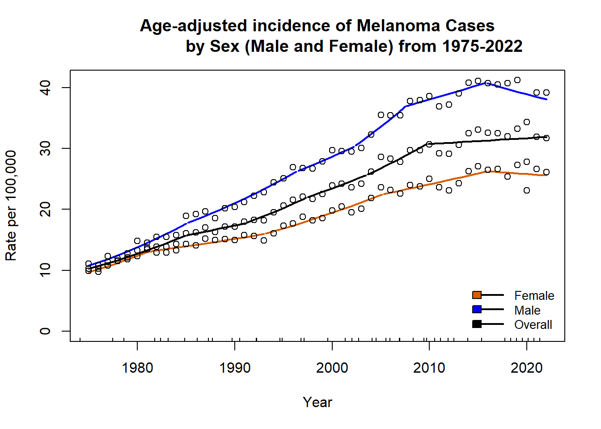
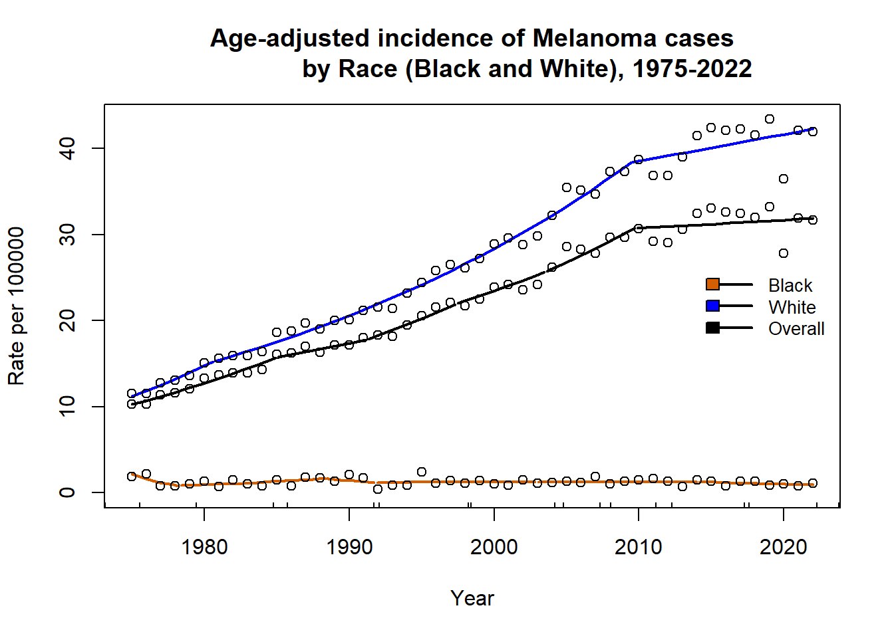
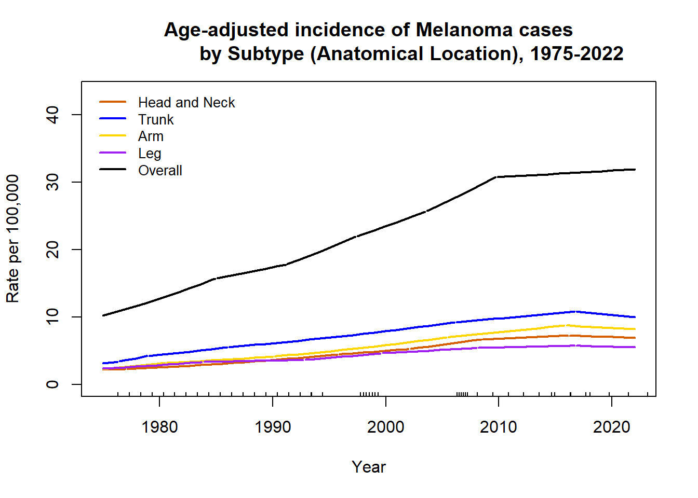
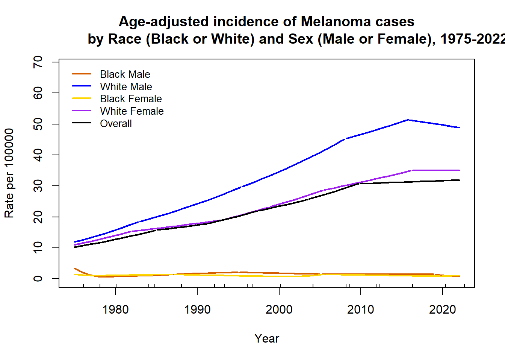
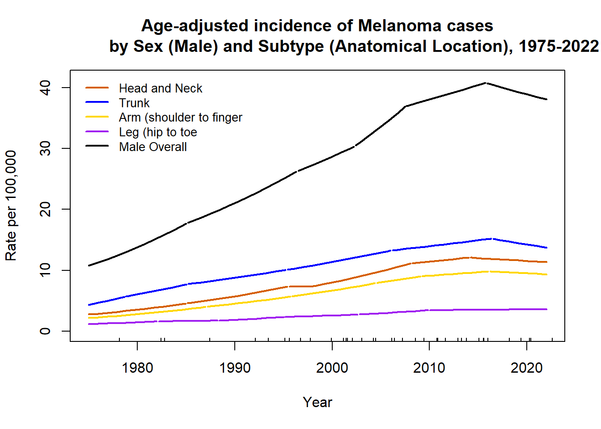

In class, we used Joinpoint to assess cancer incidence trends for head and neck cancer. In this lab, you will do the same for a cancer of your choice. You are encouraged to continue to use this cancer in labs throughout the course as your build toward the final project, though you may switch at any time.
Learning objectives: - Understand the goals and methods of joinpoint regression. - Utilize the segmented package in R to run joinpoint regression models. - Visualize and summarize cancer incidence and trends by sex, race, and cancer subtype.
Task: Follow the steps outlined below, submit a PDF of our output (render as HTML and print the HTML to PDF) that answers the questions in bold below, including any supporting plots. Also submit your R code, exported data (.dic and .csv). As with any lab, you may work in groups, but everyone should submit their own response and code, in their own words.
Criteria: This assignment will be graded on the correctness and completeness of the answers to the questions and on whether the plots are publication-ready, with easy-to-read text. Use reasonable significant digits (2-3 depending on the scale) when reporting numbers.
Steps
1
Load in the data that you retrieved from SEER*Stat for your cancer last week. Follow the instructions from lecture to run joinpoint models for your cancer 1) overall, 2) by sex, race (not including Other or Unknown categories), and subtype, and 3) for each combination of the levels of at two subgroups (i.e., race and sex, sex and subtype, or race and subtype). To get started, you may want to run just for the cancer overall to start with to make sure you understand the code and then come back to do the subgroups.
library(tidyverse)
── Attaching core tidyverse packages ──────────────────────── tidyverse 2.0.0 ──
✔ dplyr 1.1.4 ✔ readr 2.1.5
✔ forcats 1.0.0 ✔ stringr 1.5.1
✔ lubridate 1.9.4 ✔ tibble 3.3.0
✔ purrr 1.1.0 ✔ tidyr 1.3.1
── Conflicts ────────────────────────────────────────── tidyverse_conflicts() ──
✖ dplyr::filter() masks stats::filter()
✖ dplyr::lag() masks stats::lag()
ℹ Use the conflicted package (<http://conflicted.r-lib.org/>) to force all conflicts to become errors
library(ggplot2)library(segmented)
Loading required package: MASS
Attaching package: 'MASS'
The following object is masked from 'package:dplyr':
select
Loading required package: nlme
Attaching package: 'nlme'
The following object is masked from 'package:dplyr':
collapse
set.seed(0)#Load and clean datadata =read_csv("Melanoma_5.csv")
Rows: 3675 Columns: 7
── Column specification ────────────────────────────────────────────────────────
Delimiter: ","
chr (5): Race recode (White, Black, Other), Sex, Primary Site - My Variable,...
dbl (2): Count, Population
ℹ Use `spec()` to retrieve the full column specification for this data.
ℹ Specify the column types or set `show_col_types = FALSE` to quiet this message.
#Create age-adjusted counts variable for the data$Count_adj =round(data$Rate*data$Population)# #Remove the year range data_melanoma <- data|>filter(Year !="1975-2022")#Select a data subset (overall)data_melanoma_overall = data_melanoma |>filter(Race ==c("All races") & Sex =="Male and female"& Site =="All sites")#Log-linear model (Poisson)out.glm =glm(Count_adj ~ Year, data= data_melanoma_overall, family=poisson(), offset=log(Population))#Log-linear joinpoint model with two breaks#out.glm.2 = segmented(out.glm, seg.Z = ~ Year, npsi = 2)#Plot model#plot.segmented(out.glm.2, link=FALSE, ylim=c(0,max(data_melanoma_overall$Rate)))#points(data_melanoma_overall$Year, data_melanoma_overall$Rate)#Model summary including joinpoints and parameterization#summary.segmented(out.glm.2)#Slopes (annual percent change)#slope(out.glm.2, APC=TRUE)#Select the best fit number of joinpointsout.glm.best=selgmented(out.glm, seg.Z =~ Year, Kmax =5, type="bic")
No. of breakpoints: 2 .. 3 .. 4 .. 5 ..
Warning: The best BIC value at the boundary. Increase 'Kmax'?
BIC to detect no. of breakpoints:
0 1 2 3 4 5
142447930 36608524 32741279 32927743 32872455 32028633
No. of selected breakpoints: 5
plot.segmented( out.glm.best,link =FALSE,ylim =c(0, max(data_melanoma_overall$Rate)),main ="Age-adjusted incidence of Melanoma Cases Overall from 1975-2022",ylab ="Rate per 100,000")points(data_melanoma_overall$Year, data_melanoma_overall$Rate)
#Average annual percent change, 1985-2000#There is an aapc() function, but doesn't have the flexibility to specify the # periods of interest. It only calculates it on the full range.# So, let's calculate by hand.summary(out.glm.best)
***Regression Model with Segmented Relationship(s)***
Call:
segmented.glm(obj = olm, seg.Z = seg.Z, psi = start.ora, control = control1)
Estimated Break-Point(s):
Est. St.Err
psi1.Year 1984.924 0.003
psi2.Year 1991.142 0.005
psi3.Year 1997.308 0.007
psi4.Year 2003.458 0.015
psi5.Year 2009.700 0.002
Coefficients of the linear terms:
Estimate Std. Error z value Pr(>|z|)
(Intercept) -8.251e+01 1.701e-02 -4851.4 <2e-16 ***
Year 4.296e-02 8.590e-06 5000.9 <2e-16 ***
U1.Year -2.326e-02 1.465e-05 -1588.0 NA
U2.Year 1.422e-02 1.772e-05 802.4 NA
U3.Year -8.390e-03 1.759e-05 -476.9 NA
U4.Year 3.585e-03 1.553e-05 230.8 NA
U5.Year -2.606e-02 1.063e-05 -2451.6 NA
---
Signif. codes: 0 '***' 0.001 '**' 0.01 '*' 0.05 '.' 0.1 ' ' 1
(Dispersion parameter for poisson family taken to be 1)
Null deviance: 1929921126 on 47 degrees of freedom
Residual deviance: 32027552 on 36 degrees of freedom
AIC: 32028611
Convergence attained in 23 iterations (rel. change -8.064e-06)
#The relevant break points at 1984, 1995, and 2005slope(out.glm.best, APC=TRUE)
#We see that the relevant beta coefficients are -0.0344310 (for 1985-1995: # 10 years) and -0.0202100 (for 1995 to 1999: 5 years)AAPC_est = (exp((5*0.003+5*0.003)/10) -1)#AAPC on this 15 year period is -2.38% per year
#stratified by sex#Select a data subset (male), incidence of melanoma in male populationdata_melanoma_male = data_melanoma |>filter(Race =="All races"& Sex =="Male"& Site =="All sites")#Log-linear model (Poisson)out.glm_male =glm(Count_adj ~ Year, data= data_melanoma_male, family=poisson(), offset=log(Population))#Select the best fit number of joinpointsout.glm.best_male=selgmented(out.glm_male, seg.Z =~ Year, Kmax =5, type="bic")
No. of breakpoints: 2 .. 3 .. 4 .. 5 ..
Warning: The best BIC value at the boundary. Increase 'Kmax'?
BIC to detect no. of breakpoints:
0 1 2 3 4 5
135799574 26237383 20730978 20650521 20174559 16027243
No. of selected breakpoints: 5
summary(out.glm.best_male)
***Regression Model with Segmented Relationship(s)***
Call:
segmented.glm(obj = olm, seg.Z = seg.Z, psi = startpsi[[i - 1]],
control = control1)
Estimated Break-Point(s):
Est. St.Err
psi1.Year 1985.002 0.005
psi2.Year 1996.311 0.007
psi3.Year 2002.216 0.006
psi4.Year 2007.500 0.002
psi5.Year 2015.710 0.002
Coefficients of the linear terms:
Estimate Std. Error z value Pr(>|z|)
(Intercept) -9.544e+01 2.000e-02 -4771.6 <2e-16 ***
Year 4.953e-02 1.010e-05 4904.4 <2e-16 ***
U1.Year -1.472e-02 1.252e-05 -1176.0 NA
U2.Year -1.031e-02 1.695e-05 -608.2 NA
U3.Year 1.286e-02 2.354e-05 546.1 NA
U4.Year -2.510e-02 1.957e-05 -1282.3 NA
U5.Year -2.337e-02 1.201e-05 -1946.3 NA
---
Signif. codes: 0 '***' 0.001 '**' 0.01 '*' 0.05 '.' 0.1 ' ' 1
(Dispersion parameter for poisson family taken to be 1)
Null deviance: 1434694666 on 47 degrees of freedom
Residual deviance: 16026188 on 36 degrees of freedom
AIC: 16027221
Convergence attained in 2 iterations (rel. change 2.5801e-06)
#The relevant break points at 1984, 1995, and 2005slope(out.glm.best_male, APC=TRUE)
AAPC_est_male_1 = (exp(5*0.012/5) -1)AAPC_est_male_2 = (exp(5*-0.01/5) -1)#incidence of melanoma in female populationdata_melanoma_female = data_melanoma |>filter(Race =="All races"& Sex =="Female"& Site =="All sites")#Log-linear model (Poisson)out.glm_female =glm(Count_adj ~ Year, data= data_melanoma_female, family=poisson(), offset=log(Population))#Select the best fit number of joinpointsout.glm.best_female=selgmented(out.glm_female, seg.Z =~ Year, Kmax =5, type="bic")
No. of breakpoints: 2 .. 3 .. 4 .. 5 ..
BIC to detect no. of breakpoints:
0 1 2 3 4 5
39103106 17367945 15350358 15332804 12572466 12576179
No. of selected breakpoints: 4
summary(out.glm.best_female)
***Regression Model with Segmented Relationship(s)***
Call:
segmented.glm(obj = olm, seg.Z = seg.Z, psi = startpsi[[i - 1]],
control = control1)
Estimated Break-Point(s):
Est. St.Err
psi1.Year 1981.059 0.003
psi2.Year 1993.000 0.006
psi3.Year 2005.100 0.004
psi4.Year 2015.874 0.003
Coefficients of the linear terms:
Estimate Std. Error z value Pr(>|z|)
(Intercept) -9.393e+01 4.299e-02 -2185 <2e-16 ***
Year 4.871e-02 2.173e-05 2241 <2e-16 ***
U1.Year -3.189e-02 2.355e-05 -1354 NA
U2.Year 1.147e-02 1.072e-05 1070 NA
U3.Year -1.379e-02 9.003e-06 -1532 NA
U4.Year -1.885e-02 1.309e-05 -1440 NA
---
Signif. codes: 0 '***' 0.001 '**' 0.01 '*' 0.05 '.' 0.1 ' ' 1
(Dispersion parameter for poisson family taken to be 1)
Null deviance: 623610358 on 47 degrees of freedom
Residual deviance: 12571432 on 38 degrees of freedom
AIC: 12572447
Convergence attained in 7 iterations (rel. change 4.1468e-06)
#The relevant break points at 1984, 1995, and 2005slope(out.glm.best_female, APC=TRUE)
AAPC_est_female_1217 = (exp((4*.01449+1*-0.0044)/5) -1)#plot female, male and overallplot.segmented(out.glm.best_female, link=FALSE,ylim=c(0,max(data_melanoma_female$Rate, data_melanoma_male$Rate, data_melanoma_overall$Rate)),main ="Age-adjusted incidence of Melanoma Cases by Sex (Male and Female) from 1975-2022",ylab ="Rate per 100,000", col ="#D55E00")points(data_melanoma_female$Year, data_melanoma_female$Rate)plot.segmented(out.glm.best_male, link =FALSE, add =TRUE, col="blue")points(data_melanoma_male$Year, data_melanoma_male$Rate)plot.segmented(out.glm.best, link =FALSE, add =TRUE, col="black")points(data_melanoma_overall$Year, data_melanoma_overall$Rate)legend("bottomright", legend =c("Female", "Male", "Overall"), fill =c("#D55E00","blue","black"),lwd =2,lty =rep(1, 5),bty ="n",cex =0.85,inset =c(0.01,0.01))

#Stratified by black and white cases#Select a data subset (male)data_melanoma_black = data_melanoma |>filter(Race =="Black"& Sex =="Male and female"& Site =="All sites")#Log-linear model (Poisson)out.glm_black =glm(Count_adj ~ Year, data= data_melanoma_black, family=poisson(), offset=log(Population))#Select the best fit number of joinpointsout.glm.best_black=selgmented(out.glm_black, seg.Z =~ Year, Kmax =5, type="bic")
No. of breakpoints: 2 .. 3 .. 4 .. 5 ..
Warning: The best BIC value at the boundary. Increase 'Kmax'?
BIC to detect no. of breakpoints:
0 1 2 3 4 5
8760944 8263857 8250600 8046701 7112013 7108677
No. of selected breakpoints: 5
summary(out.glm.best_black)
***Regression Model with Segmented Relationship(s)***
Call:
segmented.glm(obj = olm, seg.Z = seg.Z, psi = startpsi[[i - 1]],
control = control1)
Estimated Break-Point(s):
Est. St.Err
psi1.Year 1978.199 0.003
psi2.Year 1988.335 0.006
psi3.Year 1991.730 0.010
psi4.Year 2002.836 0.083
psi5.Year 2013.966 0.014
Coefficients of the linear terms:
Estimate Std. Error z value Pr(>|z|)
(Intercept) 6.001e+02 8.645e-01 694.14 <2e-16 ***
Year -3.035e-01 4.375e-04 -693.64 <2e-16 ***
U1.Year 3.742e-01 4.488e-04 833.76 NA
U2.Year -1.707e-01 5.042e-04 -338.65 NA
U3.Year 1.066e-01 4.994e-04 213.49 NA
U4.Year -6.981e-03 9.429e-05 -74.04 NA
U5.Year -3.948e-02 9.946e-05 -396.95 NA
---
Signif. codes: 0 '***' 0.001 '**' 0.01 '*' 0.05 '.' 0.1 ' ' 1
(Dispersion parameter for poisson family taken to be 1)
Null deviance: 9046161 on 47 degrees of freedom
Residual deviance: 7107852 on 36 degrees of freedom
AIC: 7108655
Convergence attained in 25 iterations (rel. change -8.8017e-06)
#The relevant break points at 1984, 1995, and 2005slope(out.glm.best_black, APC=TRUE)
AAPC_est_black = (exp((3*-0.00037+2*-0.03985)/5) -1)#femaledata_melanoma_white = data_melanoma |>filter(Race =="White"& Sex =="Male and female"& Site =="All sites")#Log-linear model (Poisson)out.glm_white =glm(Count_adj ~ Year, data= data_melanoma_white, family=poisson(), offset=log(Population))#Select the best fit number of joinpointsout.glm.best_white=selgmented(out.glm_white, seg.Z =~ Year, Kmax =5, type="bic")
No. of breakpoints: 2 .. 3 .. 4 .. 5 ..
BIC to detect no. of breakpoints:
0 1 2 3 4 5
130683613 34776377 31417954 31721861 31539268 31539269
No. of selected breakpoints: 2
summary(out.glm.best_white)
***Regression Model with Segmented Relationship(s)***
Call:
segmented.glm(obj = olm, seg.Z = seg.Z, psi = startpsi[[i - 1]],
control = control1)
Estimated Break-Point(s):
Est. St.Err
psi1.Year 1980.586 0.003
psi2.Year 2009.455 0.001
Coefficients of the linear terms:
Estimate Std. Error z value Pr(>|z|)
(Intercept) -1.054e+02 3.948e-02 -2670 <2e-16 ***
Year 5.460e-02 1.996e-05 2735 <2e-16 ***
U1.Year -2.258e-02 2.000e-05 -1129 NA
U2.Year -2.432e-02 3.199e-06 -7602 NA
---
Signif. codes: 0 '***' 0.001 '**' 0.01 '*' 0.05 '.' 0.1 ' ' 1
(Dispersion parameter for poisson family taken to be 1)
Null deviance: 2463064012 on 47 degrees of freedom
Residual deviance: 31416898 on 42 degrees of freedom
AIC: 31417943
Convergence attained in 3 iterations (rel. change 4.7393e-11)
#The relevant break points at 1984, 1995, and 2005slope(out.glm.best_white, APC=(TRUE))
AAPC_est_white = (exp((10*-0.0344310+5*-0.0036144)/15) -1)#plot female, male and overallplot.segmented(out.glm.best_black, link=FALSE,ylim=c(0,max(data_melanoma_black$Rate, data_melanoma_white$Rate, data_melanoma_overall$Rate)),main ="Age-adjusted incidence of Melanoma cases by Race (Black and White), 1975-2022",ylab ="Rate per 100000", col ="#D55E00")points(data_melanoma_black$Year, data_melanoma_black$Rate)plot.segmented(out.glm.best_white, link =FALSE, add =TRUE, col="blue")points(data_melanoma_white$Year, data_melanoma_white$Rate)plot.segmented(out.glm.best, link =FALSE, add =TRUE, col="black")points(data_melanoma_overall$Year, data_melanoma_overall$Rate)legend("right", legend =c("Black", "White", "Overall"), fill =c("#D55E00","blue","black"),lwd =2,lty =rep(1, 5),bty ="n",cex =0.85,inset =c(0.01,0.01))

#Stratified by anatomical location#Select a data subset. Incidence of melanoma of head and neck casesdata_melanoma_headneck = data_melanoma |>filter(Race =="All races"& Sex =="Male and female"& Site =="Head and Neck")#Log-linear model (Poisson)out.glm_headneck =glm(Count_adj ~ Year, data= data_melanoma_headneck, family=poisson(), offset=log(Population))#Select the best fit number of joinpointsout.glm.best_headneck=selgmented(out.glm_headneck, seg.Z =~ Year, Kmax =5, type="bic")
No. of breakpoints: 2 .. 3 .. 4 .. 5 ..
Warning: The best BIC value at the boundary. Increase 'Kmax'?
BIC to detect no. of breakpoints:
0 1 2 3 4 5
43139525 11895017 12124036 12105405 12096068 10926418
No. of selected breakpoints: 5
summary(out.glm.best_headneck)
***Regression Model with Segmented Relationship(s)***
Call:
segmented.glm(obj = olm, seg.Z = seg.Z, psi = start.ora, control = control1)
Estimated Break-Point(s):
Est. St.Err
psi1.Year 1976.963 0.024
psi2.Year 1995.703 0.012
psi3.Year 2002.000 0.011
psi4.Year 2008.400 0.003
psi5.Year 2016.100 0.005
Coefficients of the linear terms:
Estimate Std. Error z value Pr(>|z|)
(Intercept) -3.449e+01 5.292e-01 -65.18 <2e-16 ***
Year 1.787e-02 2.679e-04 66.70 <2e-16 ***
U1.Year 1.761e-02 2.679e-04 65.73 NA
U2.Year -8.774e-03 2.130e-05 -411.85 NA
U3.Year 1.078e-02 3.023e-05 356.48 NA
U4.Year -2.737e-02 2.573e-05 -1063.67 NA
U5.Year -1.754e-02 2.294e-05 -764.42 NA
---
Signif. codes: 0 '***' 0.001 '**' 0.01 '*' 0.05 '.' 0.1 ' ' 1
(Dispersion parameter for poisson family taken to be 1)
Null deviance: 526414882 on 47 degrees of freedom
Residual deviance: 10925411 on 36 degrees of freedom
AIC: 10926396
Convergence attained in 3 iterations (rel. change 1.7195e-06)
#The relevant break points at 1984, 1995, and 2005slope(out.glm.best_headneck, APC=TRUE)
AAPC_est_headneck = (exp((4*.010116+1*-.0074197)/5) -1)##Select a data subset. Incidence of melanoma of trunk casesdata_melanoma_trunk = data_melanoma |>filter(Race =="All races"& Sex =="Male and female"& Site =="Trunk")#Log-linear model (Poisson)out.glm_trunk =glm(Count_adj ~ Year, data= data_melanoma_trunk, family=poisson(), offset=log(Population))#Select the best fit number of joinpointsout.glm.best_trunk=selgmented(out.glm_trunk, seg.Z =~ Year, Kmax =5, type="bic")
No. of breakpoints: 2 .. 3 .. 4 .. 5 ..
Warning: The best BIC value at the boundary. Increase 'Kmax'?
BIC to detect no. of breakpoints:
0 1 2 3 4 5
56433757 20666334 16372878 15766457 12098295 11919710
No. of selected breakpoints: 5
summary(out.glm.best_trunk)
***Regression Model with Segmented Relationship(s)***
Call:
segmented.glm(obj = olm, seg.Z = seg.Z, psi = startpsi[[i - 1]],
control = control1)
Estimated Break-Point(s):
Est. St.Err
psi1.Year 1976.295 0.017
psi2.Year 1978.885 0.007
psi3.Year 1985.963 0.008
psi4.Year 2006.065 0.006
psi5.Year 2016.666 0.002
Coefficients of the linear terms:
Estimate Std. Error z value Pr(>|z|)
(Intercept) -1.190e+02 4.436e-01 -268.36 <2e-16 ***
Year 6.085e-02 2.245e-04 271.03 <2e-16 ***
U1.Year 2.013e-02 3.021e-04 66.64 NA
U2.Year -4.258e-02 2.034e-04 -209.36 NA
U3.Year -1.294e-02 2.356e-05 -549.08 NA
U4.Year -1.030e-02 8.371e-06 -1230.68 NA
U5.Year -3.085e-02 1.751e-05 -1761.83 NA
---
Signif. codes: 0 '***' 0.001 '**' 0.01 '*' 0.05 '.' 0.1 ' ' 1
(Dispersion parameter for poisson family taken to be 1)
Null deviance: 596582494 on 47 degrees of freedom
Residual deviance: 11918681 on 36 degrees of freedom
AIC: 11919688
Convergence attained in 7 iterations (rel. change -9.2776e-06)
#The relevant break points at 1984, 1995, and 2005slope(out.glm.best_trunk, APC=TRUE)
#AAPC_est_trunk = (exp((10*-0.0344310 + 5*-0.0036144)/15) - 1)#Select a data subset. Incidence of melanoma of arm casesdata_melanoma_arm = data_melanoma |>filter(Race =="All races"& Sex =="Male and female"& Site =="Arm (shoulder to finger)")#Log-linear model (Poisson)out.glm_arm =glm(Count_adj ~ Year, data= data_melanoma_arm, family=poisson(), offset=log(Population))#Select the best fit number of joinpointsout.glm.best_arm=selgmented(out.glm_arm, seg.Z =~ Year, Kmax =5, type="bic")
No. of breakpoints: 2 .. 3 .. 4 .. 5 ..
BIC to detect no. of breakpoints:
0 1 2 3 4 5
41429108 13155454 12525217 12325340 10036957 10340369
No. of selected breakpoints: 4
summary(out.glm.best_arm)
***Regression Model with Segmented Relationship(s)***
Call:
segmented.glm(obj = olm, seg.Z = seg.Z, psi = startpsi[[i - 1]],
control = control1)
Estimated Break-Point(s):
Est. St.Err
psi1.Year 1980.468 0.005
psi2.Year 1990.001 0.014
psi3.Year 2005.343 0.006
psi4.Year 2015.768 0.002
Coefficients of the linear terms:
Estimate Std. Error z value Pr(>|z|)
(Intercept) -1.155e+02 8.015e-02 -1441.3 <2e-16 ***
Year 5.892e-02 4.053e-05 1453.8 <2e-16 ***
U1.Year -3.185e-02 4.323e-05 -736.7 NA
U2.Year 6.825e-03 1.626e-05 419.7 NA
U3.Year -1.234e-02 1.070e-05 -1153.1 NA
U4.Year -3.252e-02 1.634e-05 -1990.8 NA
---
Signif. codes: 0 '***' 0.001 '**' 0.01 '*' 0.05 '.' 0.1 ' ' 1
(Dispersion parameter for poisson family taken to be 1)
Null deviance: 628990953 on 47 degrees of freedom
Residual deviance: 10035950 on 38 degrees of freedom
AIC: 10036938
Convergence attained in 3 iterations (rel. change -8.7271e-07)
#The relevant break points at 1984, 1995, and 2005slope(out.glm.best_arm, APC=TRUE)
AAPC_est_arm = (exp((4*.021558+1*-0.010964)/5) -1)#data_melanoma_leg = data_melanoma |>filter(Race =="All races"& Sex =="Male and female"& Site =="Leg (hip to toe)")#Log-linear model (Poisson)out.glm_leg =glm(Count_adj ~ Year, data= data_melanoma_leg, family=poisson(), offset=log(Population))#Select the best fit number of joinpointsout.glm.best_leg=selgmented(out.glm_leg, seg.Z =~ Year, Kmax =4, type="bic")
No. of breakpoints: 2 .. 3 .. 4 ..
BIC to detect no. of breakpoints:
0 1 3 4 5
24636774 8891629 7715217 7295632 6860245
No. of selected breakpoints: 5
summary(out.glm.best_leg)
***Regression Model with Segmented Relationship(s)***
Call:
segmented.glm(obj = olm, seg.Z = seg.Z, psi = startpsi[[i - 1]],
control = control1)
Estimated Break-Point(s):
Est. St.Err
psi1.Year 1983.746 0.005
psi2.Year 1992.684 0.005
psi3.Year 1999.528 0.007
psi4.Year 2007.999 0.008
psi5.Year 2016.679 0.006
Coefficients of the linear terms:
Estimate Std. Error z value Pr(>|z|)
(Intercept) -7.652e+01 4.221e-02 -1812.9 <2e-16 ***
Year 3.918e-02 2.132e-05 1837.5 <2e-16 ***
U1.Year -2.941e-02 2.776e-05 -1059.2 NA
U2.Year 2.544e-02 2.881e-05 883.3 NA
U3.Year -1.672e-02 2.773e-05 -603.0 NA
U4.Year -1.196e-02 2.000e-05 -597.9 NA
U5.Year -1.480e-02 2.448e-05 -604.6 NA
---
Signif. codes: 0 '***' 0.001 '**' 0.01 '*' 0.05 '.' 0.1 ' ' 1
(Dispersion parameter for poisson family taken to be 1)
Null deviance: 227646796 on 47 degrees of freedom
Residual deviance: 6859242 on 36 degrees of freedom
AIC: 6860223
Convergence attained in 3 iterations (rel. change 3.593e-06)
#The relevant break points at 1984, 1995, and 2005slope(out.glm.best_leg, APC=TRUE)
#AAPC_est_leg = (exp((10*-0.0344310 + 5*-0.0036144)/15) - 1)ylim_max =max(c(data_melanoma_headneck$Rate, data_melanoma_trunk$Rate, data_melanoma_arm$Rate, data_melanoma_leg$Rate, data_melanoma_overall$Rate),na.rm =TRUE)plot.segmented(out.glm.best_headneck, link=FALSE,ylim =c(0,ylim_max*1.3),main ="Age-adjusted incidence of Melanoma cases by Subtype (Anatomical Location), 1975-2022",ylab ="Rate per 100,000", col ="#D55E00")#points(data_melanoma_headneck$Year,data_melanoma_headneck$Rate)plot.segmented(out.glm.best_trunk, link =FALSE, add =TRUE, col="blue")#points(data_melanoma_trunk$Year, data_melanoma_trunk$Rate)plot.segmented(out.glm.best_arm, link =FALSE, add =TRUE, col="gold")#points(data_melanoma_arm$Year, data_melanoma_arm$Rate)plot.segmented(out.glm.best_leg, link =FALSE, add =TRUE, col="purple")#points(data_melanoma_leg$Year, data_melanoma_leg$Rate)plot.segmented(out.glm.best, link =FALSE, add =TRUE, col="black")#points(data_melanoma_overall$Year, data_melanoma_overall$Rate)legend("topleft", legend =c("Head and Neck", "Trunk", "Arm", "Leg", "Overall"), col =c("#D55E00","blue", "gold", "purple", "black"),lwd =2,lty =rep(1, 5),bty ="n",cex =0.85,inset =c(0.01,0.01))

#Stratified by sex(male and female) and race(black and white)#Select a data subset. Incidence of melanoma of head and neck casesdata_melanoma_black_male = data_melanoma |>filter(Race =="Black"& Sex =="Male"& Site =="All sites")#Log-linear model (Poisson)out.glm_black_male =glm(Count_adj ~ Year, data= data_melanoma_black_male, family=poisson(), offset=log(Population))#Select the best fit number of joinpointsout.glm.best_black_male=selgmented(out.glm_black_male, seg.Z =~ Year, Kmax =5, type="bic")
No. of breakpoints: 2 .. 3 .. 4 .. 5 ..
Warning: The best BIC value at the boundary. Increase 'Kmax'?
BIC to detect no. of breakpoints:
0 1 2 3 4 5
14949694 13954579 13590840 13578978 11639634 11475945
No. of selected breakpoints: 5
summary(out.glm.best_black_male)
***Regression Model with Segmented Relationship(s)***
Call:
segmented.glm(obj = olm, seg.Z = seg.Z, psi = startpsi[[i - 1]],
control = control1)
Estimated Break-Point(s):
Est. St.Err
psi1.Year 1978.248 0.003
psi2.Year 1989.366 0.023
psi3.Year 1994.991 0.023
psi4.Year 2004.986 0.025
psi5.Year 2018.854 0.005
Coefficients of the linear terms:
Estimate Std. Error z value Pr(>|z|)
(Intercept) 1.017e+03 1.177e+00 864.1 <2e-16 ***
Year -5.144e-01 5.958e-04 -863.4 <2e-16 ***
U1.Year 6.017e-01 6.101e-04 986.2 NA
U2.Year -4.879e-02 4.198e-04 -116.2 NA
U3.Year -7.082e-02 4.086e-04 -173.3 NA
U4.Year 2.868e-02 1.048e-04 273.7 NA
U5.Year -1.720e-01 3.912e-04 -439.6 NA
---
Signif. codes: 0 '***' 0.001 '**' 0.01 '*' 0.05 '.' 0.1 ' ' 1
(Dispersion parameter for poisson family taken to be 1)
Null deviance: 15065944 on 47 degrees of freedom
Residual deviance: 11475153 on 36 degrees of freedom
AIC: 11475923
Convergence attained in 5 iterations (rel. change -7.6179e-06)
#The relevant break points at 1984, 1995, and 2005slope(out.glm.best_black_male, APC=TRUE)
AAPC_est_black_male = (exp((2*-0.004+3*-.161)/5) -1)*100##Select a data subset. Incidence of melanoma of trunk casesdata_melanoma_white_male = data_melanoma |>filter(Race =="White"& Sex =="Male"& Site =="All sites")#Log-linear model (Poisson)out.glm_white_male =glm(Count_adj ~ Year, data= data_melanoma_white_male, family=poisson(), offset=log(Population))#Select the best fit number of joinpointsout.glm.best_white_male=selgmented(out.glm_white_male, seg.Z =~ Year, Kmax =4, type="bic")
No. of breakpoints: 2 .. 3 .. 4 ..
Warning: The best BIC value at the boundary. Increase 'Kmax'?
BIC to detect no. of breakpoints:
0 1 2 3 4
123735472 25164024 19912912 19880274 16501508
No. of selected breakpoints: 4
summary(out.glm.best_white_male)
***Regression Model with Segmented Relationship(s)***
Call:
segmented.glm(obj = olm, seg.Z = seg.Z, psi = startpsi[[i - 1]],
control = control1)
Estimated Break-Point(s):
Est. St.Err
psi1.Year 1982.775 0.005
psi2.Year 1995.298 0.012
psi3.Year 2008.000 0.003
psi4.Year 2015.755 0.002
Coefficients of the linear terms:
Estimate Std. Error z value Pr(>|z|)
(Intercept) -1.089e+02 3.441e-02 -3165.8 <2e-16 ***
Year 5.640e-02 1.739e-05 3244.0 <2e-16 ***
U1.Year -1.843e-02 1.846e-05 -998.4 NA
U2.Year -4.804e-03 7.721e-06 -622.2 NA
U3.Year -1.641e-02 1.090e-05 -1505.5 NA
U4.Year -2.475e-02 1.366e-05 -1811.7 NA
---
Signif. codes: 0 '***' 0.001 '**' 0.01 '*' 0.05 '.' 0.1 ' ' 1
(Dispersion parameter for poisson family taken to be 1)
Null deviance: 1695214121 on 47 degrees of freedom
Residual deviance: 16500463 on 38 degrees of freedom
AIC: 16501490
Convergence attained in 4 iterations (rel. change 7.2565e-06)
#The relevant break points at 1984, 1995, and 2005slope(out.glm.best_white_male, APC=TRUE)
#AAPC_est_white_male = (exp((*-0.0344310 + 5*-0.0036144)/15) - 1)#Select a data subset. Incidence of melanoma of arm casesdata_melanoma_black_female = data_melanoma |>filter(Race =="Black"& Sex =="Female"& Site =="All sites")#Log-linear model (Poisson)out.glm_black_female =glm(Count_adj ~ Year, data= data_melanoma_black_female, family=poisson(), offset=log(Population))#Select the best fit number of joinpointsout.glm.best_black_female=selgmented(out.glm_black_female, seg.Z =~ Year, Kmax =5, type="bic")
No. of breakpoints: 2 .. 3 .. 4 .. 5 ..
Warning: The best BIC value at the boundary. Increase 'Kmax'?
BIC to detect no. of breakpoints:
0 1 2 3 4 5
6124024 6062332 5828607 5434568 5240752 4852297
No. of selected breakpoints: 5
summary(out.glm.best_black_female)
***Regression Model with Segmented Relationship(s)***
Call:
segmented.glm(obj = olm, seg.Z = seg.Z, psi = start.ora, control = control)
Estimated Break-Point(s):
Est. St.Err
psi1.Year 1977.661 0.013
psi2.Year 1987.000 0.012
psi3.Year 2001.712 0.005
psi4.Year 2005.489 0.005
psi5.Year 2019.650 0.007
Coefficients of the linear terms:
Estimate Std. Error z value Pr(>|z|)
(Intercept) 2.492e+02 1.928e+00 129.3 <2e-16 ***
Year -1.260e-01 9.756e-04 -129.1 <2e-16 ***
U1.Year 1.627e-01 9.896e-04 164.4 NA
U2.Year -8.543e-02 1.802e-04 -474.1 NA
U3.Year 2.432e-01 4.728e-04 514.3 NA
U4.Year -2.339e-01 4.713e-04 -496.3 NA
U5.Year 1.746e-01 6.194e-04 281.9 NA
---
Signif. codes: 0 '***' 0.001 '**' 0.01 '*' 0.05 '.' 0.1 ' ' 1
(Dispersion parameter for poisson family taken to be 1)
Null deviance: 6262252 on 47 degrees of freedom
Residual deviance: 4851510 on 36 degrees of freedom
AIC: 4852275
Boot restarting based on 7 samples. Last fit:
Convergence attained in 3 iterations (rel. change 1.1132e-06)
#The relevant break points at 1984, 1995, and 2005slope(out.glm.best_black_female, APC=TRUE)
AAPC_est_black_female = (exp((3*-.038725+2*.144700)/5) -1)*100#data_melanoma_white_female = data_melanoma |>filter(Race =="White"& Sex =="Female"& Site =="All sites")#Log-linear model (Poisson)out.glm_white_female =glm(Count_adj ~ Year, data= data_melanoma_white_female, family=poisson(), offset=log(Population))#Select the best fit number of joinpointsout.glm.best_white_female=selgmented(out.glm_white_female, seg.Z =~ Year, Kmax =5, type="bic")
No. of breakpoints: 2 .. 3 .. 4 .. 5 ..
Warning: The best BIC value at the boundary. Increase 'Kmax'?
BIC to detect no. of breakpoints:
0 1 2 3 4 5
36390093 16732621 14872406 14751363 12023918 11988873
No. of selected breakpoints: 5
summary(out.glm.best_white_female)
***Regression Model with Segmented Relationship(s)***
Call:
segmented.glm(obj = olm, seg.Z = seg.Z, psi = startpsi[[i - 1]],
control = control1)
Estimated Break-Point(s):
Est. St.Err
psi1.Year 1981.838 0.004
psi2.Year 1993.044 0.007
psi3.Year 1998.766 0.044
psi4.Year 2005.345 0.005
psi5.Year 2016.064 0.004
Coefficients of the linear terms:
Estimate Std. Error z value Pr(>|z|)
(Intercept) -9.334e+01 4.350e-02 -2146.08 <2e-16 ***
Year 4.848e-02 2.199e-05 2204.86 <2e-16 ***
U1.Year -2.912e-02 2.341e-05 -1243.78 NA
U2.Year 1.505e-02 2.726e-05 552.12 NA
U3.Year -2.207e-03 2.952e-05 -74.74 NA
U4.Year -1.357e-02 1.519e-05 -893.27 NA
U5.Year -1.859e-02 1.554e-05 -1195.95 NA
---
Signif. codes: 0 '***' 0.001 '**' 0.01 '*' 0.05 '.' 0.1 ' ' 1
(Dispersion parameter for poisson family taken to be 1)
Null deviance: 884606116 on 47 degrees of freedom
Residual deviance: 11987833 on 36 degrees of freedom
AIC: 11988850
Convergence attained in 12 iterations (rel. change -7.8784e-06)
#The relevant break points at 1984, 1995, and 2005slope(out.glm.best_white_female, APC=TRUE)
AAPC_est_white_female = (exp((10*-0.0344310+5*-0.0036144)/15) -1)*100ylim_max =max(c(data_melanoma_black_male$Rate, data_melanoma_white_male$Rate, data_melanoma_black_female$Rate, data_melanoma_white_female$Rate, data_melanoma_overall$Rate),na.rm =TRUE)plot.segmented(out.glm.best_black_male, link=FALSE,ylim =c(0,ylim_max*1.3),main ="Age-adjusted incidence of Melanoma cases by Race (Black or White) and Sex (Male or Female), 1975-2022",ylab ="Rate per 100000", col ="#D55E00")plot.segmented(out.glm.best_white_male, link =FALSE, add =TRUE, col="blue")plot.segmented(out.glm.best_black_female, link =FALSE, add =TRUE, col="gold")plot.segmented(out.glm.best_white_female, link =FALSE, add =TRUE, col="purple")plot.segmented(out.glm.best, link =FALSE, add =TRUE, col="black")legend("topleft", legend =c("Black Male", "White Male", "Black Female", "White Female", "Overall"), col =c("#D55E00","blue", "gold", "purple", "black"),lwd =2,lty =rep(1, 5),bty ="n",cex =0.85,inset =c(0.01,0.01))

#Stratified by sex(male or female) and subsite#Select a data subset. Incidence of melanoma of head and neck casesdata_melanoma_male_head_neck = data_melanoma |>filter(Race =="All races"& Sex =="Male"& Site =="Head and Neck")#Log-linear model (Poisson)out.glm_male_head_neck =glm(Count_adj ~ Year, data= data_melanoma_male_head_neck, family=poisson(), offset=log(Population))#Select the best fit number of joinpointsout.glm.best_male_head_neck=selgmented(out.glm_male_head_neck, seg.Z =~ Year, Kmax =5, type="bic")
No. of breakpoints: 2 .. 3 .. 4 .. 5 ..
Warning: The best BIC value at the boundary. Increase 'Kmax'?
BIC to detect no. of breakpoints:
0 1 2 3 4 5
59207506 15911455 14665533 14528730 12951496 12896470
No. of selected breakpoints: 5
summary(out.glm.best_male_head_neck)
***Regression Model with Segmented Relationship(s)***
Call:
segmented.glm(obj = olm, seg.Z = seg.Z, psi = startpsi[[i - 1]],
control = control1)
Estimated Break-Point(s):
Est. St.Err
psi1.Year 1984.943 0.029
psi2.Year 1995.399 0.005
psi3.Year 1997.991 0.008
psi4.Year 2008.045 0.004
psi5.Year 2014.000 0.004
Coefficients of the linear terms:
Estimate Std. Error z value Pr(>|z|)
(Intercept) -9.915e+01 4.648e-02 -2133.2 <2e-16 ***
Year 5.072e-02 2.348e-05 2160.5 <2e-16 ***
U1.Year -5.668e-03 2.755e-05 -205.7 NA
U2.Year -4.258e-02 1.809e-04 -235.4 NA
U3.Year 3.860e-02 1.806e-04 213.7 NA
U4.Year -2.720e-02 2.444e-05 -1113.0 NA
U5.Year -2.170e-02 2.595e-05 -836.4 NA
---
Signif. codes: 0 '***' 0.001 '**' 0.01 '*' 0.05 '.' 0.1 ' ' 1
(Dispersion parameter for poisson family taken to be 1)
Null deviance: 528877724 on 47 degrees of freedom
Residual deviance: 12895475 on 36 degrees of freedom
AIC: 12896447
Convergence attained in 3 iterations (rel. change -6.542e-06)
#The relevant break points at 1984, 1995, and 2005slope(out.glm.best_male_head_neck, APC=TRUE)
AAPC_est_male_head_neck = (exp((3*.0139730+2*-0.0077973)/5) -1)*100##Select a data subset. Incidence of melanoma of trunk casesdata_melanoma_male_trunk = data_melanoma |>filter(Race =="All races"& Sex =="Male"& Site =="Trunk")#Log-linear model (Poisson)out.glm_male_trunk =glm(Count_adj ~ Year, data= data_melanoma_male_trunk, family=poisson(), offset=log(Population))#Select the best fit number of joinpointsout.glm.best_male_trunk=selgmented(out.glm_male_trunk, seg.Z =~ Year, Kmax =5, type="bic")
No. of breakpoints: 2 .. 3 .. 4 .. 5 ..
Warning: The best BIC value at the boundary. Increase 'Kmax'?
BIC to detect no. of breakpoints:
0 1 2 3 4 5
50275126 16289319 11693169 9150531 9370208 8985669
No. of selected breakpoints: 5
summary(out.glm.best_male_trunk)
***Regression Model with Segmented Relationship(s)***
Call:
segmented.glm(obj = olm, seg.Z = seg.Z, psi = startpsi[[i - 1]],
control = control1)
Estimated Break-Point(s):
Est. St.Err
psi1.Year 1978.689 0.010
psi2.Year 1985.047 0.006
psi3.Year 1995.221 0.226
psi4.Year 2006.009 0.007
psi5.Year 2016.324 0.003
Coefficients of the linear terms:
Estimate Std. Error z value Pr(>|z|)
(Intercept) -1.388e+02 1.632e-01 -850.48 <2e-16 ***
Year 7.104e-02 8.259e-05 860.21 <2e-16 ***
U1.Year -2.256e-02 8.725e-05 -258.51 NA
U2.Year -2.255e-02 3.119e-05 -722.95 NA
U3.Year -4.243e-04 1.638e-05 -25.91 NA
U4.Year -1.215e-02 1.313e-05 -925.46 NA
U5.Year -3.138e-02 2.111e-05 -1486.52 NA
---
Signif. codes: 0 '***' 0.001 '**' 0.01 '*' 0.05 '.' 0.1 ' ' 1
(Dispersion parameter for poisson family taken to be 1)
Null deviance: 409269536 on 47 degrees of freedom
Residual deviance: 8984658 on 36 degrees of freedom
AIC: 8985647
Convergence attained in 2 iterations (rel. change -3.9602e-06)
#The relevant break points at 1984, 1995, and 2005slope(out.glm.best_male_trunk, APC=TRUE)
#AAPC_est_male_trunk = (exp((10*-0.0344310 + 5*-0.0036144)/15) - 1)*100#Select a data subset. Incidence of melanoma of arm casesdata_melanoma_male_arm = data_melanoma |>filter(Race =="All races"& Sex =="Male"& Site =="Arm (shoulder to finger)")#Log-linear model (Poisson)out.glm_male_arm =glm(Count_adj ~ Year, data= data_melanoma_male_arm, family=poisson(), offset=log(Population))#Select the best fit number of joinpointsout.glm.best_male_arm=selgmented(out.glm_male_arm, seg.Z =~ Year, Kmax =5, type="bic")
No. of breakpoints: 2 .. 3 .. 4 .. 5 ..
Warning: The best BIC value at the boundary. Increase 'Kmax'?
BIC to detect no. of breakpoints:
0 1 2 3 4 5
41616893 8934193 7873900 7733249 7709743 7030943
No. of selected breakpoints: 5
summary(out.glm.best_male_arm)
***Regression Model with Segmented Relationship(s)***
Call:
segmented.glm(obj = olm, seg.Z = seg.Z, psi = startpsi[[i - 1]],
control = control1)
Estimated Break-Point(s):
Est. St.Err
psi1.Year 1987.000 0.017
psi2.Year 1995.687 0.051
psi3.Year 2004.401 0.015
psi4.Year 2009.044 0.008
psi5.Year 2016.003 0.005
Coefficients of the linear terms:
Estimate Std. Error z value Pr(>|z|)
(Intercept) -9.895e+01 3.325e-02 -2975.53 <2e-16 ***
Year 5.050e-02 1.678e-05 3009.78 <2e-16 ***
U1.Year -1.035e-02 3.046e-05 -339.73 NA
U2.Year -2.853e-03 3.057e-05 -93.33 NA
U3.Year -9.029e-03 3.888e-05 -232.24 NA
U4.Year -1.536e-02 3.990e-05 -385.01 NA
U5.Year -2.159e-02 3.019e-05 -714.95 NA
---
Signif. codes: 0 '***' 0.001 '**' 0.01 '*' 0.05 '.' 0.1 ' ' 1
(Dispersion parameter for poisson family taken to be 1)
Null deviance: 438444516 on 47 degrees of freedom
Residual deviance: 7029959 on 36 degrees of freedom
AIC: 7030920
Convergence attained in 2 iterations (rel. change -2.749e-06)
#The relevant break points at 1984, 1995, and 2005slope(out.glm.best_male_arm, APC=TRUE)
#AAPC_est_male_arm = (exp((10*-0.0344310 + 5*-0.0036144)/15) - 1)*100#data_melanoma_male_leg = data_melanoma |>filter(Race =="All races"& Sex =="Male"& Site =="Leg (hip to toe)")#Log-linear model (Poisson)out.glm_male_leg =glm(Count_adj ~ Year, data= data_melanoma_male_leg, family=poisson(), offset=log(Population))#Select the best fit number of joinpointsout.glm.best_male_leg=selgmented(out.glm_male_leg, seg.Z =~ Year, Kmax =5, type="bic")
No. of breakpoints: 2 .. 3 .. 4 .. 5 ..
Warning: The best BIC value at the boundary. Increase 'Kmax'?
BIC to detect no. of breakpoints:
0 1 2 3 4 5
11184654 6412871 6366352 6365649 6212315 6103344
No. of selected breakpoints: 5
summary(out.glm.best_male_leg)
***Regression Model with Segmented Relationship(s)***
Call:
segmented.glm(obj = olm, seg.Z = seg.Z, psi = startpsi[[i - 1]],
control = control1)
Estimated Break-Point(s):
Est. St.Err
psi1.Year 1981.991 0.010
psi2.Year 1988.235 0.010
psi3.Year 1995.001 0.012
psi4.Year 2002.609 0.021
psi5.Year 2009.838 0.006
Coefficients of the linear terms:
Estimate Std. Error z value Pr(>|z|)
(Intercept) -9.152e+01 1.281e-01 -714.5 <2e-16 ***
Year 4.643e-02 6.475e-05 717.0 <2e-16 ***
U1.Year -3.509e-02 8.462e-05 -414.6 NA
U2.Year 3.004e-02 7.193e-05 417.6 NA
U3.Year -1.982e-02 6.198e-05 -319.8 NA
U4.Year 1.017e-02 5.357e-05 189.9 NA
U5.Year -2.804e-02 3.718e-05 -754.1 NA
---
Signif. codes: 0 '***' 0.001 '**' 0.01 '*' 0.05 '.' 0.1 ' ' 1
(Dispersion parameter for poisson family taken to be 1)
Null deviance: 110088068 on 47 degrees of freedom
Residual deviance: 6102402 on 36 degrees of freedom
AIC: 6103321
Convergence attained in 5 iterations (rel. change 1.9259e-06)
#The relevant break points at 1984, 1995, and 2005slope(out.glm.best_male_leg, APC=TRUE)
AAPC_est_male_leg = (exp((4*0.0185840+1*-0.0068449)/5) -1)*100ylim_max =max(c(data_melanoma_male_head_neck$Rate, data_melanoma_male_trunk$Rate, data_melanoma_male_arm$Rate, data_melanoma_male_leg$Rate, data_melanoma_male$Rate),na.rm =TRUE)plot.segmented(out.glm.best_male_head_neck, link=FALSE,ylim =c(0,ylim_max),main ="Age-adjusted incidence of Melanoma cases by Sex (Male) and Subtype (Anatomical Location), 1975-2022",ylab ="Rate per 100,000", col ="#D55E00")plot.segmented(out.glm.best_male_trunk, link =FALSE, add =TRUE, col="blue")plot.segmented(out.glm.best_male_arm, link =FALSE, add =TRUE, col="gold")plot.segmented(out.glm.best_male_leg, link =FALSE, add =TRUE, col="purple")plot.segmented(out.glm.best_male, link =FALSE, add =TRUE, col="black")legend("topleft", legend =c("Head and Neck", "Trunk", "Arm (shoulder to finger", "Leg (hip to toe", "Male Overall"), col =c("#D55E00","blue", "gold", "purple", "black"),lwd =2,lty =rep(1, 5),bty ="n",cex =0.85,inset =c(0.01,0.01))

#Stratified by sex(felmale) and subsite#Select a data subset. Incidence of melanoma of head and neck casesdata_melanoma_female_head_neck = data_melanoma |>filter(Race =="All races"& Sex =="Female"& Site =="Head and Neck")#Log-linear model (Poisson)out.glm_female_head_neck =glm(Count_adj ~ Year, data= data_melanoma_female_head_neck, family=poisson(), offset=log(Population))#Select the best fit number of joinpointsout.glm.best_female_head_neck=selgmented(out.glm_female_head_neck, seg.Z =~ Year, Kmax =5, type="bic")
No. of breakpoints: 2 .. 3 .. 4 .. 5 ..
BIC to detect no. of breakpoints:
0 1 2 3 4 5
6890969 4735352 4625940 4335937 4300326 4300327
No. of selected breakpoints: 4
summary(out.glm.best_female_head_neck)
***Regression Model with Segmented Relationship(s)***
Call:
segmented.glm(obj = olm, seg.Z = seg.Z, psi = startpsi[[i - 1]],
control = control1)
Estimated Break-Point(s):
Est. St.Err
psi1.Year 1980.900 0.030
psi2.Year 1994.314 0.010
psi3.Year 1998.000 0.012
psi4.Year 2009.110 0.012
Coefficients of the linear terms:
Estimate Std. Error z value Pr(>|z|)
(Intercept) -4.573e+01 1.386e-01 -329.9 <2e-16 ***
Year 2.341e-02 7.010e-05 334.0 <2e-16 ***
U1.Year -9.688e-03 7.203e-05 -134.5 NA
U2.Year 3.279e-02 1.538e-04 213.2 NA
U3.Year -2.958e-02 1.537e-04 -192.4 NA
U4.Year -1.138e-02 1.994e-05 -570.7 NA
---
Signif. codes: 0 '***' 0.001 '**' 0.01 '*' 0.05 '.' 0.1 ' ' 1
(Dispersion parameter for poisson family taken to be 1)
Null deviance: 64877914 on 47 degrees of freedom
Residual deviance: 4299387 on 38 degrees of freedom
AIC: 4300307
Convergence attained in 2 iterations (rel. change 1.1213e-06)
#The relevant break points at 1984, 1995, and 2005slope(out.glm.best_female_head_neck, APC=TRUE)
#AAPC_est_female_head_neck = (exp((10*-0.0344310 + 5*-0.0036144)/15) - 1)*100##Select a data subset. Incidence of melanoma of trunk casesdata_melanoma_female_trunk = data_melanoma |>filter(Race =="All races"& Sex =="Female"& Site =="Trunk")#Log-linear model (Poisson)out.glm_female_trunk =glm(Count_adj ~ Year, data= data_melanoma_female_trunk, family=poisson(), offset=log(Population))#Select the best fit number of joinpointsout.glm.best_female_trunk=selgmented(out.glm_female_trunk, seg.Z =~ Year, Kmax =4, type="bic" )
No. of breakpoints: 2 .. 3 .. 4 ..
Warning: The best BIC value at the boundary. Increase 'Kmax'?
BIC to detect no. of breakpoints:
0 1 2 3 4
17564667 10870587 10189829 9337902 8548179
No. of selected breakpoints: 4
summary(out.glm.best_female_trunk)
***Regression Model with Segmented Relationship(s)***
Call:
segmented.glm(obj = olm, seg.Z = seg.Z, psi = startpsi[[i - 1]],
control = control1)
Estimated Break-Point(s):
Est. St.Err
psi1.Year 1987.865 0.007
psi2.Year 2000.966 0.007
psi3.Year 2004.999 0.007
psi4.Year 2016.512 0.005
Coefficients of the linear terms:
Estimate Std. Error z value Pr(>|z|)
(Intercept) -8.089e+01 3.271e-02 -2473.0 <2e-16 ***
Year 4.137e-02 1.650e-05 2506.6 <2e-16 ***
U1.Year -2.161e-02 2.057e-05 -1050.8 NA
U2.Year 2.323e-02 6.461e-05 359.6 NA
U3.Year -2.610e-02 6.425e-05 -406.2 NA
U4.Year -2.193e-02 2.863e-05 -766.3 NA
---
Signif. codes: 0 '***' 0.001 '**' 0.01 '*' 0.05 '.' 0.1 ' ' 1
(Dispersion parameter for poisson family taken to be 1)
Null deviance: 222119345 on 47 degrees of freedom
Residual deviance: 8547211 on 38 degrees of freedom
AIC: 8548160
Convergence attained in 2 iterations (rel. change -4.2069e-06)
#The relevant break points at 1984, 1995, and 2005slope(out.glm.best_female_trunk, APC=TRUE)
AAPC_est_female_trunk = (exp((10*-0.0344310+5*-0.0036144)/15) -1)*100#Select a data subset. Incidence of melanoma of arm casesdata_melanoma_female_arm = data_melanoma |>filter(Race =="All races"& Sex =="Female"& Site =="Arm (shoulder to finger)")#Log-linear model (Poisson)out.glm_female_arm =glm(Count_adj ~ Year, data= data_melanoma_female_arm, family=poisson(), offset=log(Population))#Select the best fit number of joinpointsout.glm.best_female_arm=selgmented(out.glm_female_arm, seg.Z =~ Year, Kmax =4, type="bic")
No. of breakpoints: 2 .. 3 .. 4 ..
BIC to detect no. of breakpoints:
0 1 2 4 5
12861690 7231516 7006583 5981326 5270011
No. of selected breakpoints: 5
summary(out.glm.best_female_arm)
***Regression Model with Segmented Relationship(s)***
Call:
segmented.glm(obj = olm, seg.Z = seg.Z, psi = startpsi[[i - 1]],
control = control1)
Estimated Break-Point(s):
Est. St.Err
psi1.Year 1980.975 0.005
psi2.Year 1989.895 0.009
psi3.Year 1996.008 0.061
psi4.Year 2016.103 0.003
psi5.Year 2018.370 0.003
Coefficients of the linear terms:
Estimate Std. Error z value Pr(>|z|)
(Intercept) -1.169e+02 1.074e-01 -1088.8 <2e-16 ***
Year 5.966e-02 5.430e-05 1098.9 <2e-16 ***
U1.Year -4.954e-02 5.954e-05 -832.0 NA
U2.Year 1.945e-02 3.994e-05 486.9 NA
U3.Year -2.085e-03 3.198e-05 -65.2 NA
U4.Year -7.497e-02 1.533e-04 -489.0 NA
U5.Year 6.605e-02 1.606e-04 411.3 NA
---
Signif. codes: 0 '***' 0.001 '**' 0.01 '*' 0.05 '.' 0.1 ' ' 1
(Dispersion parameter for poisson family taken to be 1)
Null deviance: 233983418 on 47 degrees of freedom
Residual deviance: 5269031 on 36 degrees of freedom
AIC: 5269988
Convergence attained in 5 iterations (rel. change -2.2165e-06)
#The relevant break points at 1984, 1995, and 2005slope(out.glm.best_female_arm, APC=TRUE)
AAPC_est_female_arm = (exp((2*-0.046377+3*.018736)/5) -1)*100#data_melanoma_female_leg = data_melanoma |>filter(Race =="All races"& Sex =="Female"& Site =="Leg (hip to toe)")#Log-linear model (Poisson)out.glm_female_leg =glm(Count_adj ~ Year, data= data_melanoma_female_leg, family=poisson(), offset=log(Population))#Select the best fit number of joinpointsout.glm.best_female_leg=selgmented(out.glm_female_leg, seg.Z =~ Year, Kmax =3, type="bic")
No. of breakpoints: 2 .. 3 ..
BIC to detect no. of breakpoints:
0 1 3 4
18975096 7783352 6222275 5856328
No. of selected breakpoints: 4
summary(out.glm.best_female_leg)
***Regression Model with Segmented Relationship(s)***
Call:
segmented.glm(obj = olm, seg.Z = seg.Z, psi = startpsi[[i - 1]],
control = control1)
Estimated Break-Point(s):
Est. St.Err
psi1.Year 1982.873 0.005
psi2.Year 1992.478 0.007
psi3.Year 2005.517 0.004
psi4.Year 2019.000 0.007
Coefficients of the linear terms:
Estimate Std. Error z value Pr(>|z|)
(Intercept) -8.392e+01 5.913e-02 -1419.3 <2e-16 ***
Year 4.311e-02 2.988e-05 1442.8 <2e-16 ***
U1.Year -3.372e-02 3.475e-05 -970.3 NA
U2.Year 1.771e-02 2.034e-05 870.9 NA
U3.Year -2.360e-02 1.239e-05 -1905.4 NA
U4.Year -2.424e-02 7.728e-05 -313.7 NA
---
Signif. codes: 0 '***' 0.001 '**' 0.01 '*' 0.05 '.' 0.1 ' ' 1
(Dispersion parameter for poisson family taken to be 1)
Null deviance: 137350498 on 47 degrees of freedom
Residual deviance: 5855348 on 38 degrees of freedom
AIC: 5856309
Convergence attained in 21 iterations (rel. change -1.8527e-06)
#The relevant break points at 1984, 1995, and 2005slope(out.glm.best_female_leg, APC=TRUE)
AAPC_est_female_leg = (exp((3*-0.0035055+2*-0.0205280)/5) -1)*100ylim_max =max(c(data_melanoma_female_head_neck$Rate, data_melanoma_female_trunk$Rate, data_melanoma_female_arm$Rate, data_melanoma_female_leg$Rate, data_melanoma_female$Rate),na.rm =TRUE)plot.segmented(out.glm.best_female_head_neck, link=FALSE,ylim =c(0,ylim_max),main ="Age-adjusted incidence of Melanoma cases by Sex (Female) and Subtype (Anatomical Location), 1975-2022",ylab ="Rate per 100,000", col ="#D55E00")plot.segmented(out.glm.best_female_trunk, link =FALSE, add =TRUE, col="blue")plot.segmented(out.glm.best_female_arm, link =FALSE, add =TRUE, col="gold")plot.segmented(out.glm.best_female_leg, link =FALSE, add =TRUE, col="purple")plot.segmented(out.glm.best_female, link =FALSE, add =TRUE, col="black")legend("topleft", legend =c("Head and Neck", "Trunk", "Arm (shoulder to finger", "Leg (hip to toe", "Female Overall"), col =c("#D55E00", "blue", "gold", "purple", "black"),lwd =2,lty =rep(1, 5),bty ="n",cex =0.85,inset =c(0.01,0.01))
#Stratified by race (white) and subsite#Select a data subset. Incidence of melanoma of head and neck casesdata_melanoma_white_head_neck = data_melanoma |>filter(Race =="White"& Sex =="Male and female"& Site =="Head and Neck")#Log-linear model (Poisson)out.glm_white_head_neck =glm(Count_adj ~ Year, data= data_melanoma_white_head_neck, family=poisson(), offset=log(Population))#Select the best fit number of joinpointsout.glm.best_white_head_neck=selgmented(out.glm_white_head_neck, seg.Z =~ Year, Kmax =5, type="bic")
No. of breakpoints: 2 .. 3 .. 4 .. 5 ..
Warning: The best BIC value at the boundary. Increase 'Kmax'?
BIC to detect no. of breakpoints:
0 1 2 3 4 5
38897940 11856419 12095874 12088022 11289094 11069093
No. of selected breakpoints: 5
summary(out.glm.best_white_head_neck)
***Regression Model with Segmented Relationship(s)***
Call:
segmented.glm(obj = olm, seg.Z = seg.Z, psi = startpsi[[i - 1]],
control = control1)
Estimated Break-Point(s):
Est. St.Err
psi1.Year 1982.254 0.037
psi2.Year 1996.482 0.012
psi3.Year 2001.999 0.010
psi4.Year 2008.556 0.003
psi5.Year 2015.935 0.006
Coefficients of the linear terms:
Estimate Std. Error z value Pr(>|z|)
(Intercept) -6.869e+01 5.508e-02 -1246.9 <2e-16 ***
Year 3.522e-02 2.784e-05 1265.3 <2e-16 ***
U1.Year 3.851e-03 2.931e-05 131.4 NA
U2.Year -1.059e-02 3.603e-05 -293.9 NA
U3.Year 1.331e-02 3.947e-05 337.2 NA
U4.Year -2.832e-02 2.470e-05 -1146.3 NA
U5.Year -1.453e-02 2.257e-05 -643.9 NA
---
Signif. codes: 0 '***' 0.001 '**' 0.01 '*' 0.05 '.' 0.1 ' ' 1
(Dispersion parameter for poisson family taken to be 1)
Null deviance: 646156518 on 47 degrees of freedom
Residual deviance: 11068089 on 36 degrees of freedom
AIC: 11069071
Convergence attained in 2 iterations (rel. change -1.143e-06)
#The relevant break points at 1984, 1995, and 2005slope(out.glm.best_white_head_neck, APC=TRUE)
#AAPC_est_white_head_neck = (exp((10*-0.0344310 + 5*-0.0036144)/15) - 1)*100##Select a data subset. Incidence of melanoma of trunk casesdata_melanoma_white_trunk = data_melanoma |>filter(Race =="White"& Sex =="Male and female"& Site =="Trunk")#Log-linear model (Poisson)out.glm_white_trunk =glm(Count_adj ~ Year, data= data_melanoma_white_trunk, family=poisson(), offset=log(Population))#Select the best fit number of joinpointsout.glm.best_white_trunk=selgmented(out.glm_white_trunk, seg.Z =~ Year, Kmax =5, type="bic")
No. of breakpoints: 2 .. 3 .. 4 .. 5 ..
Warning: The best BIC value at the boundary. Increase 'Kmax'?
BIC to detect no. of breakpoints:
0 1 2 3 4 5
52347501 19472117 15545224 13745145 13170348 10184609
No. of selected breakpoints: 5
summary(out.glm.best_white_trunk)
***Regression Model with Segmented Relationship(s)***
Call:
segmented.glm(obj = olm, seg.Z = seg.Z, psi = start.ora, control = control1)
Estimated Break-Point(s):
Est. St.Err
psi1.Year 1979.860 0.005
psi2.Year 1987.039 0.009
psi3.Year 2007.045 0.006
psi4.Year 2017.693 0.001
psi5.Year 2020.001 0.002
Coefficients of the linear terms:
Estimate Std. Error z value Pr(>|z|)
(Intercept) -1.433e+02 9.222e-02 -1553.8 <2e-16 ***
Year 7.320e-02 4.664e-05 1569.4 <2e-16 ***
U1.Year -3.518e-02 5.016e-05 -701.3 NA
U2.Year -9.435e-03 1.878e-05 -502.4 NA
U3.Year -1.003e-02 8.526e-06 -1176.8 NA
U4.Year -7.163e-02 4.883e-05 -1467.0 NA
U5.Year 1.003e-01 1.061e-04 945.0 NA
---
Signif. codes: 0 '***' 0.001 '**' 0.01 '*' 0.05 '.' 0.1 ' ' 1
(Dispersion parameter for poisson family taken to be 1)
Null deviance: 769956205 on 47 degrees of freedom
Residual deviance: 10183582 on 36 degrees of freedom
AIC: 10184586
Convergence attained in 2 iterations (rel. change -4.1095e-06)
#The relevant break points at 1984, 1995, and 2005slope(out.glm.best_white_trunk, APC=TRUE)
AAPC_est_white_trunk = (exp((1*.01727+2*-0.051695+2*.048353)/5) -1)*100#Select a data subset. Incidence of melanoma of arm casesdata_melanoma_white_arm = data_melanoma |>filter(Race =="White"& Sex =="Male and female"& Site =="Arm (shoulder to finger)")#Log-linear model (Poisson)out.glm_white_arm =glm(Count_adj ~ Year, data= data_melanoma_white_arm, family=poisson(), offset=log(Population))#Select the best fit number of joinpointsout.glm.best_white_arm=selgmented(out.glm_white_arm, seg.Z =~ Year, Kmax =5, type="bic")
No. of breakpoints: 2 .. 3 .. 4 .. 5 ..
Warning: The best BIC value at the boundary. Increase 'Kmax'?
BIC to detect no. of breakpoints:
0 1 2 3 4 5
37285809 12530633 10402727 9904084 9677818 9672209
No. of selected breakpoints: 5
summary(out.glm.best_white_arm)
***Regression Model with Segmented Relationship(s)***
Call:
segmented.glm(obj = olm, seg.Z = seg.Z, psi = startpsi[[i - 1]],
control = control1)
Estimated Break-Point(s):
Est. St.Err
psi1.Year 1980.009 0.005
psi2.Year 1993.316 0.035
psi3.Year 1999.943 0.058
psi4.Year 2006.607 0.006
psi5.Year 2015.978 0.003
Coefficients of the linear terms:
Estimate Std. Error z value Pr(>|z|)
(Intercept) -1.197e+02 8.092e-02 -1479.15 <2e-16 ***
Year 6.110e-02 4.092e-05 1493.18 <2e-16 ***
U1.Year -2.832e-02 4.211e-05 -672.55 NA
U2.Year 3.384e-03 2.768e-05 122.25 NA
U3.Year 2.032e-03 3.134e-05 64.82 NA
U4.Year -1.514e-02 2.061e-05 -734.31 NA
U5.Year -2.896e-02 1.765e-05 -1640.99 NA
---
Signif. codes: 0 '***' 0.001 '**' 0.01 '*' 0.05 '.' 0.1 ' ' 1
(Dispersion parameter for poisson family taken to be 1)
Null deviance: 768038670 on 47 degrees of freedom
Residual deviance: 9671196 on 36 degrees of freedom
AIC: 9672186
Convergence attained in 24 iterations (rel. change -7.7673e-06)
#The relevant break points at 1984, 1995, and 2005slope(out.glm.best_white_arm, APC=TRUE)
#AAPC_est_white_arm = (exp((10*-0.0344310 + 5*-0.0036144)/15) - 1)*100#data_melanoma_white_leg = data_melanoma |>filter(Race =="White"& Sex =="Male and female"& Site =="Leg (hip to toe)")#Log-linear model (Poisson)out.glm_white_leg =glm(Count_adj ~ Year, data= data_melanoma_white_leg, family=poisson(), offset=log(Population))#Select the best fit number of joinpointsout.glm.best_white_leg=selgmented(out.glm_white_leg, seg.Z =~ Year, Kmax =4, type="bic")
No. of breakpoints: 2 .. 3 .. 4 ..
BIC to detect no. of breakpoints:
0 1 3 4 5
23684628 9212158 7954762 7610731 7491767
No. of selected breakpoints: 5
summary(out.glm.best_white_leg)
***Regression Model with Segmented Relationship(s)***
Call:
segmented.glm(obj = olm, seg.Z = seg.Z, psi = start.ora, control = control1)
Estimated Break-Point(s):
Est. St.Err
psi1.Year 1981.956 0.007
psi2.Year 1986.947 0.017
psi3.Year 1993.032 0.006
psi4.Year 1995.752 0.008
psi5.Year 2007.496 0.004
Coefficients of the linear terms:
Estimate Std. Error z value Pr(>|z|)
(Intercept) -9.367e+01 6.532e-02 -1434.1 <2e-16 ***
Year 4.790e-02 3.302e-05 1450.8 <2e-16 ***
U1.Year -2.676e-02 5.713e-05 -468.4 NA
U2.Year -1.055e-02 5.348e-05 -197.2 NA
U3.Year 4.755e-02 1.816e-04 261.9 NA
U4.Year -3.061e-02 1.799e-04 -170.1 NA
U5.Year -2.102e-02 1.083e-05 -1941.9 NA
---
Signif. codes: 0 '***' 0.001 '**' 0.01 '*' 0.05 '.' 0.1 ' ' 1
(Dispersion parameter for poisson family taken to be 1)
Null deviance: 324168636 on 47 degrees of freedom
Residual deviance: 7490766 on 36 degrees of freedom
AIC: 7491745
Convergence attained in 28 iterations (rel. change -7.973e-06)
#The relevant break points at 1984, 1995, and 2005slope(out.glm.best_white_leg, APC=TRUE)
#AAPC_est_white_leg = (exp((10*-0.0344310 + 5*-0.0036144)/15) - 1)*100ylim_max =max(c(data_melanoma_white_head_neck$Rate, data_melanoma_white_trunk$Rate, data_melanoma_white_arm$Rate, data_melanoma_white_leg$Rate, data_melanoma_white$Rate),na.rm =TRUE)plot.segmented(out.glm.best_white_head_neck, link=FALSE,ylim =c(0,ylim_max),main ="Age-adjusted incidence of Melanoma cases by Race (White) and Subtype (Anatomical Location), 1975-2022",ylab ="Rate per 100000", col ="#D55E00")plot.segmented(out.glm.best_white_trunk, link =FALSE, add =TRUE, col="blue")plot.segmented(out.glm.best_white_arm, link =FALSE, add =TRUE, col="gold")plot.segmented(out.glm.best_white_leg, link =FALSE, add =TRUE, col="purple")plot.segmented(out.glm.best_white, link =FALSE, add =TRUE, col="black")legend("topleft", legend =c("Head and Neck", "Trunk", "Arm (shoulder to finger", "Leg (hip to toe", "White Overall"), col =c("#D55E00","blue", "gold", "purple", "black"),lwd =2,lty =rep(1, 5),bty ="n",cex =0.85,inset =c(0.01,0.01))
#Stratified by black and subsite#Select a data subset. Incidence of melanoma of head and neck casesdata_melanoma_black_head_neck = data_melanoma |>filter(Race =="Black"& Sex =="Male and female"& Site =="Head and Neck")#Log-linear model (Poisson)out.glm_black_head_neck =glm(Count_adj ~ Year, data= data_melanoma_black_head_neck, family=poisson(), offset=log(Population))#Select the best fit number of joinpointsout.glm.best_black_head_neck=selgmented(out.glm_black_head_neck, seg.Z =~ Year, Kmax =5, type="bic")
No. of breakpoints: 2 .. 3 .. 4 .. 5 ..
Warning: The best BIC value at the boundary. Increase 'Kmax'?
BIC to detect no. of breakpoints:
0 1 2 3 4 5
10688864 10402456 10291150 9845608 9068286 8906694
No. of selected breakpoints: 5
summary(out.glm.best_black_head_neck)
***Regression Model with Segmented Relationship(s)***
Call:
segmented.glm(obj = olm, seg.Z = seg.Z, psi = startpsi[[i - 1]],
control = control1)
Estimated Break-Point(s):
Est. St.Err
psi1.Year 1980.922 0.008
psi2.Year 1987.000 0.006
psi3.Year 2001.331 0.021
psi4.Year 2015.659 0.005
psi5.Year 2018.574 0.002
Coefficients of the linear terms:
Estimate Std. Error z value Pr(>|z|)
(Intercept) 7.628e+02 1.746e+00 437.0 <2e-16 ***
Year -3.869e-01 8.832e-04 -438.1 <2e-16 ***
U1.Year 7.067e-01 1.132e-03 624.3 NA
U2.Year -3.160e-01 7.226e-04 -437.2 NA
U3.Year -6.668e-02 1.973e-04 -337.9 NA
U4.Year 5.633e-01 1.239e-03 454.5 NA
U5.Year -9.581e-01 1.456e-03 -657.8 NA
---
Signif. codes: 0 '***' 0.001 '**' 0.01 '*' 0.05 '.' 0.1 ' ' 1
(Dispersion parameter for poisson family taken to be 1)
Null deviance: 10690626 on 47 degrees of freedom
Residual deviance: 8906162 on 36 degrees of freedom
AIC: 8906671
Convergence attained in 0 iterations (rel. change -7.43e-06)
#The relevant break points at 1984, 1995, and 2005slope(out.glm.best_black_head_neck, APC=TRUE)
AAPC_est_black_head_neck = (exp((2*.6495+3*-0.36723)/5) -1)*100##Select a data subset. Incidence of melanoma of trunk casesdata_melanoma_black_trunk = data_melanoma |>filter(Race =="Black"& Sex =="Male and female"& Site =="Trunk")#Log-linear model (Poisson)out.glm_black_trunk =glm(Count_adj ~ Year, data= data_melanoma_black_trunk, family=poisson(), offset=log(Population))#Select the best fit number of joinpointsout.glm.best_black_trunk=selgmented(out.glm_black_trunk, seg.Z =~ Year, Kmax =5, type="bic")
No. of breakpoints: 2 .. 3 .. 4 .. 5 ..
BIC to detect no. of breakpoints:
0 1 2 3 4 5
10046024 9743167 8516158 8451485 8459060 9213400
No. of selected breakpoints: 1 (2 breakpoint(s) removed due to small slope diff)
summary(out.glm.best_black_trunk)
***Regression Model with Segmented Relationship(s)***
Call:
segmented.glm(obj = olm, seg.Z = seg.Z, psi = all.psi, control = control)
Estimated Break-Point(s):
Est. St.Err
psi1.Year 1985.937 0.029
Coefficients of the linear terms:
Estimate Std. Error z value Pr(>|z|)
(Intercept) -1.821e+02 6.774e-01 -268.8 <2e-16 ***
Year 9.086e-02 3.422e-04 265.5 <2e-16 ***
U1.Year -8.958e-02 3.432e-04 -261.0 NA
---
Signif. codes: 0 '***' 0.001 '**' 0.01 '*' 0.05 '.' 0.1 ' ' 1
(Dispersion parameter for poisson family taken to be 1)
Null deviance: 10221267 on 47 degrees of freedom
Residual deviance: 9806321 on 44 degrees of freedom
AIC: 9806853
Boot restarting based on 6 samples. Last fit:
Convergence attained in 20 iterations (rel. change -8.1257e-06)
#The relevant break points at 1984, 1995, and 2005slope(out.glm.best_black_trunk, APC=TRUE)
#AAPC_est_black_trunk = (exp((10*-0.0344310 + 5*-0.0036144)/15) - 1)*100#Select a data subset. Incidence of melanoma of arm casesdata_melanoma_black_arm = data_melanoma |>filter(Race =="Black"& Sex =="Male and female"& Site =="Arm (shoulder to finger)")#Log-linear model (Poisson)out.glm_black_arm =glm(Count_adj ~ Year, data= data_melanoma_black_arm, family=poisson(), offset=log(Population))#Select the best fit number of joinpointsout.glm.best_black_arm=selgmented(out.glm_black_arm, seg.Z =~ Year, Kmax =5, type="bic")
No. of breakpoints: 2 .. 3 .. 4 .. 5 ..
BIC to detect no. of breakpoints:
0 1 2 3 4 5
8708219 8540129 8358298 8349704 8349705 8349706
No. of selected breakpoints: 3
summary(out.glm.best_black_arm)
***Regression Model with Segmented Relationship(s)***
Call:
segmented.glm(obj = olm, seg.Z = seg.Z, psi = startpsi[[i - 1]],
control = control1)
Estimated Break-Point(s):
Est. St.Err
psi1.Year 1986.234 0.078
psi2.Year 1997.547 0.074
psi3.Year 2011.129 0.016
Coefficients of the linear terms:
Estimate Std. Error z value Pr(>|z|)
(Intercept) -7.369e+01 5.286e-01 -139.41 <2e-16 ***
Year 3.616e-02 2.669e-04 135.46 <2e-16 ***
U1.Year -2.926e-02 3.224e-04 -90.74 NA
U2.Year 2.204e-02 2.227e-04 98.95 NA
U3.Year -7.760e-02 1.977e-04 -392.57 NA
---
Signif. codes: 0 '***' 0.001 '**' 0.01 '*' 0.05 '.' 0.1 ' ' 1
(Dispersion parameter for poisson family taken to be 1)
Null deviance: 8878329 on 47 degrees of freedom
Residual deviance: 8349137 on 40 degrees of freedom
AIC: 8349689
Convergence attained in 11 iterations (rel. change -9.6233e-06)
#The relevant break points at 1984, 1995, and 2005slope(out.glm.best_black_arm, APC=TRUE)
#AAPC_est_black_arm = (exp((10*-0.0344310 + 5*-0.0036144)/15) - 1)*100#data_melanoma_black_leg = data_melanoma |>filter(Race =="All races"& Sex =="Male and female"& Site =="Leg (hip to toe)")#Log-linear model (Poisson)out.glm_black_leg =glm(Count_adj ~ Year, data= data_melanoma_black_leg, family=poisson(), offset=log(Population))#Select the best fit number of joinpointsout.glm.best_black_leg=selgmented(out.glm_black_leg, seg.Z =~ Year, Kmax =4, type="bic")
No. of breakpoints: 2 .. 3 .. 4 ..
BIC to detect no. of breakpoints:
0 1 3 4 5
24636774 8891629 7715217 7295632 6860245
No. of selected breakpoints: 5
summary(out.glm.best_black_leg)
***Regression Model with Segmented Relationship(s)***
Call:
segmented.glm(obj = olm, seg.Z = seg.Z, psi = startpsi[[i - 1]],
control = control1)
Estimated Break-Point(s):
Est. St.Err
psi1.Year 1983.746 0.005
psi2.Year 1992.684 0.005
psi3.Year 1999.528 0.007
psi4.Year 2007.999 0.008
psi5.Year 2016.679 0.006
Coefficients of the linear terms:
Estimate Std. Error z value Pr(>|z|)
(Intercept) -7.652e+01 4.221e-02 -1812.9 <2e-16 ***
Year 3.918e-02 2.132e-05 1837.5 <2e-16 ***
U1.Year -2.941e-02 2.776e-05 -1059.2 NA
U2.Year 2.544e-02 2.881e-05 883.3 NA
U3.Year -1.672e-02 2.773e-05 -603.0 NA
U4.Year -1.196e-02 2.000e-05 -597.9 NA
U5.Year -1.480e-02 2.448e-05 -604.6 NA
---
Signif. codes: 0 '***' 0.001 '**' 0.01 '*' 0.05 '.' 0.1 ' ' 1
(Dispersion parameter for poisson family taken to be 1)
Null deviance: 227646796 on 47 degrees of freedom
Residual deviance: 6859242 on 36 degrees of freedom
AIC: 6860223
Convergence attained in 3 iterations (rel. change 3.593e-06)
#The relevant break points at 1984, 1995, and 2005slope(out.glm.best_black_leg, APC=TRUE)
#AAPC_est_black_leg = (exp((*-0.0344310 + 5*-0.0036144)/15) - 1)*100ylim_max =max(c(data_melanoma_black_head_neck$Rate, data_melanoma_black_trunk$Rate, data_melanoma_black_arm$Rate, data_melanoma_black_leg$Rate, data_melanoma_black$Rate),na.rm =TRUE)plot.segmented(out.glm.best_black_head_neck, link=FALSE,ylim =c(0,ylim_max),main ="Age-adjusted incidence of Melanoma cases by Race (Black) and Subtype (Anatomical Location), 1975-2022",ylab ="Rate per 100,000", col ="#D55E00")plot.segmented(out.glm.best_black_trunk, link =FALSE, add =TRUE, col="blue")plot.segmented(out.glm.best_black_arm, link =FALSE, add =TRUE, col="gold")plot.segmented(out.glm.best_black_leg, link =FALSE, add =TRUE, col="purple")plot.segmented(out.glm.best_black, link =FALSE, add =TRUE, col="black")legend("topleft", legend =c("Head and Neck", "Trunk", "Arm (shoulder to finger", "Leg (hip to toe", "Black Overall"), col =c("#D55E00","blue", "gold", "purple", "black"),lwd =2,lty =rep(1, 5),bty ="n",cex =0.85,inset =c(0.01,0.01))
#Stratified by black male and subsite#Select a data subset. Incidence of melanoma of head and neck casesdata_melanoma_black_male_head_neck = data_melanoma |>filter(Race =="Black"& Sex =="Male"& Site =="Head and Neck")#Log-linear model (Poisson)out.glm_black_male_head_neck =glm(Count_adj ~ Year, data= data_melanoma_black_male_head_neck, family=poisson(), offset=log(Population))#Select the best fit number of joinpointsout.glm.best_black_male_head_neck=selgmented(out.glm_black_male_head_neck, seg.Z =~ Year, Kmax =5, type="bic")
No. of breakpoints: 2 .. 3 .. 4 .. 5 ..
BIC to detect no. of breakpoints:
0 1 2 3 4 5
13704812 13059388 12678757 11493876 11353720 11353721
No. of selected breakpoints: 4
summary(out.glm.best_black_male_head_neck)
***Regression Model with Segmented Relationship(s)***
Call:
segmented.glm(obj = olm, seg.Z = seg.Z, psi = startpsi[[i - 1]],
control = control1)
Estimated Break-Point(s):
Est. St.Err
psi1.Year 1980.364 0.007
psi2.Year 1994.994 0.006
psi3.Year 2004.663 0.020
psi4.Year 2014.337 0.016
Coefficients of the linear terms:
Estimate Std. Error z value Pr(>|z|)
(Intercept) 9.897e+02 2.145e+00 461.3 <2e-16 ***
Year -5.016e-01 1.086e-03 -462.1 <2e-16 ***
U1.Year 7.123e-01 1.117e-03 637.8 NA
U2.Year -3.466e-01 3.528e-04 -982.5 NA
U3.Year 1.131e-01 3.830e-04 295.3 NA
U4.Year 1.486e-01 4.228e-04 351.4 NA
---
Signif. codes: 0 '***' 0.001 '**' 0.01 '*' 0.05 '.' 0.1 ' ' 1
(Dispersion parameter for poisson family taken to be 1)
Null deviance: 13712320 on 47 degrees of freedom
Residual deviance: 11353301 on 38 degrees of freedom
AIC: 11353701
Convergence attained in 3 iterations (rel. change -9.6783e-06)
#The relevant break points at 1984, 1995, and 2005slope(out.glm.best_black_male_head_neck, APC=TRUE)
#AAPC_est_black_male_head_neck = (exp((10*-0.0344310 + 5*-0.0036144)/15) - 1)*100##Select a data subset. Incidence of melanoma of trunk casesdata_melanoma_black_male_trunk = data_melanoma |>filter(Race =="Black"& Sex =="Male"& Site =="Trunk")#Log-linear model (Poisson)out.glm_black_male_trunk =glm(Count_adj ~ Year, data= data_melanoma_black_male_trunk, family=poisson(), offset=log(Population))#Select the best fit number of joinpointsout.glm.best_black_male_trunk=selgmented(out.glm_black_male_trunk, seg.Z =~ Year, Kmax =5, type="bic")
No. of breakpoints: 2 .. 3 .. 4 .. 5 ..
BIC to detect no. of breakpoints:
0 1 2 3 5 7
11277272 9629657 9579288 9458706 9458707 9458708
No. of selected breakpoints: 3
summary(out.glm.best_black_male_trunk)
***Regression Model with Segmented Relationship(s)***
Call:
segmented.glm(obj = olm, seg.Z = seg.Z, psi = startpsi[[i - 1]],
control = control1)
Estimated Break-Point(s):
Est. St.Err
psi1.Year 1986.547 0.005
psi2.Year 2001.800 0.029
psi3.Year 2017.028 0.016
Coefficients of the linear terms:
Estimate Std. Error z value Pr(>|z|)
(Intercept) -7.157e+02 1.098e+00 -652.0 <2e-16 ***
Year 3.599e-01 5.533e-04 650.5 <2e-16 ***
U1.Year -4.050e-01 5.669e-04 -714.5 NA
U2.Year 5.237e-02 1.631e-04 321.1 NA
U3.Year -1.792e-01 7.872e-04 -227.6 NA
---
Signif. codes: 0 '***' 0.001 '**' 0.01 '*' 0.05 '.' 0.1 ' ' 1
(Dispersion parameter for poisson family taken to be 1)
Null deviance: 11277247 on 47 degrees of freedom
Residual deviance: 9458247 on 40 degrees of freedom
AIC: 9458691
Convergence attained in 11 iterations (rel. change -6.9586e-06)
#The relevant break points at 1984, 1995, and 2005slope(out.glm.best_black_male_trunk, APC=TRUE)
#AAPC_est_black_male_trunk = (exp((10*-0.0344310 + 5*-0.0036144)/15) - 1)*100#Select a data subset. Incidence of melanoma of arm casesdata_melanoma_black_male_arm = data_melanoma |>filter(Race =="Black"& Sex =="Male"& Site =="Arm (shoulder to finger)")#Log-linear model (Poisson)out.glm_black_male_arm =glm(Count_adj ~ Year, data= data_melanoma_black_male_arm, family=poisson(), offset=log(Population))#Select the best fit number of joinpointsout.glm.best_black_male_arm=selgmented(out.glm_black_male_arm, seg.Z =~ Year, Kmax =5, type="bic")
No. of breakpoints: 2 .. 3 .. 4 .. 5 ..
BIC to detect no. of breakpoints:
0 1 2 3 4 5
9221999 8542803 8497363 8381591 7106173 7106174
No. of selected breakpoints: 1 (3 breakpoint(s) removed due to small slope diff)
summary(out.glm.best_black_male_arm)
***Regression Model with Segmented Relationship(s)***
Call:
segmented.glm(obj = olm, seg.Z = seg.Z, psi = all.psi, control = control)
Estimated Break-Point(s):
Est. St.Err
psi1.Year 1989 0.013
Coefficients of the linear terms:
Estimate Std. Error z value Pr(>|z|)
(Intercept) -3.605e+02 7.488e-01 -481.4 <2e-16 ***
Year 1.806e-01 3.774e-04 478.5 <2e-16 ***
U1.Year -1.848e-01 3.793e-04 -487.2 NA
---
Signif. codes: 0 '***' 0.001 '**' 0.01 '*' 0.05 '.' 0.1 ' ' 1
(Dispersion parameter for poisson family taken to be 1)
Null deviance: 9495589 on 47 degrees of freedom
Residual deviance: 8542390 on 44 degrees of freedom
AIC: 8542798
Boot restarting based on 7 samples. Last fit:
Convergence attained in 0 iterations (rel. change 2.0979e-06)
#The relevant break points at 1984, 1995, and 2005slope(out.glm.best_black_male_arm, APC=TRUE)
#AAPC_est_black_male_arm = (exp((10*-0.0344310 + 5*-0.0036144)/15) - 1)*100#data_melanoma_black_male_leg = data_melanoma |>filter(Race =="Black"& Sex =="Male"& Site =="Leg (hip to toe)")#Log-linear model (Poisson)out.glm_black_male_leg =glm(Count_adj ~ Year, data= data_melanoma_black_male_leg, family=poisson(), offset=log(Population))#Select the best fit number of joinpointsout.glm.best_black_male_leg=selgmented(out.glm_black_male_leg, seg.Z =~ Year, Kmax =5, type="bic")
No. of breakpoints: 2 .. 3 .. 4 .. 5 ..
Warning: The best BIC value at the boundary. Increase 'Kmax'?
BIC to detect no. of breakpoints:
0 1 2 3 4 5
14092092 12812825 11761350 11567357 10906919 9250482
No. of selected breakpoints: 5
summary(out.glm.best_black_male_leg)
***Regression Model with Segmented Relationship(s)***
Call:
segmented.glm(obj = olm, seg.Z = seg.Z, psi = start.ora, control = control)
Estimated Break-Point(s):
Est. St.Err
psi1.Year 1979 0.003
psi2.Year 1990 0.001
psi3.Year 1992 0.002
psi4.Year 1999 0.004
psi5.Year 2015 0.009
Coefficients of the linear terms:
Estimate Std. Error z value Pr(>|z|)
(Intercept) 9.193e+02 9.922e-01 926.5 <2e-16 ***
Year -4.649e-01 5.021e-04 -926.0 <2e-16 ***
U1.Year 5.762e-01 5.343e-04 1078.3 NA
U2.Year -1.037e+00 1.224e-03 -847.1 NA
U3.Year 1.156e+00 1.248e-03 926.3 NA
U4.Year -2.479e-01 3.097e-04 -800.5 NA
U5.Year -1.275e-01 2.610e-04 -488.5 NA
---
Signif. codes: 0 '***' 0.001 '**' 0.01 '*' 0.05 '.' 0.1 ' ' 1
(Dispersion parameter for poisson family taken to be 1)
Null deviance: 14664110 on 47 degrees of freedom
Residual deviance: 9249760 on 36 degrees of freedom
AIC: 9250460
Boot restarting based on 7 samples. Last fit:
Convergence attained in -1 iterations (rel. change 10)
#The relevant break points at 1984, 1995, and 2005slope(out.glm.best_black_male_leg, APC=TRUE)
#AAPC_est_black_male_leg = (exp((10*-0.0344310 + 5*-0.0036144)/15) - 1)*100ylim_max =max(c(data_melanoma_black_male_head_neck$Rate, data_melanoma_black_male_trunk$Rate, data_melanoma_black_male_arm$Rate, data_melanoma_black_male_leg$Rate, data_melanoma_black_male$Rate),na.rm =TRUE)plot.segmented(out.glm.best_black_male_head_neck, link=FALSE,ylim =c(0,ylim_max),main ="Age-adjusted incidence of Melanoma cases by Race (Black) and Sex (Male) and Subtype, 1975-2022",ylab ="Rate per 100,000", col ="#D55E00")plot.segmented(out.glm.best_black_male_trunk, link =FALSE, add =TRUE, col="blue")plot.segmented(out.glm.best_black_male_arm, link =FALSE, add =TRUE, col="gold")plot.segmented(out.glm.best_black_male_leg, link =FALSE, add =TRUE, col="purple")plot.segmented(out.glm.best_black_male, link =FALSE, add =TRUE, col="black")legend("topright", legend =c("Head and Neck", "Trunk", "Arm (shoulder to finger", "Leg (hip to toe", "Black Male Overall"), col =c("#D55E00","blue", "gold", "purple", "black"),lwd =2,lty =rep(1, 5),bty ="n",cex =0.85,inset =c(0.01,0.01))
#Stratified by white male and subsite#Select a data subset. Incidence of melanoma of head and neck casesdata_melanoma_white_male_head_neck = data_melanoma |>filter(Race =="White"& Sex =="Male"& Site =="Head and Neck")#Log-linear model (Poisson)out.glm_white_male_head_neck =glm(Count_adj ~ Year, data= data_melanoma_white_male_head_neck, family=poisson(), offset=log(Population))#Select the best fit number of joinpointsout.glm.best_white_male_head_neck=selgmented(out.glm_white_male_head_neck, seg.Z =~ Year, Kmax =5, type="bic")
No. of breakpoints: 2 .. 3 .. 4 .. 5 ..
Warning: The best BIC value at the boundary. Increase 'Kmax'?
BIC to detect no. of breakpoints:
0 1 2 3 4 5
52000338 14433619 13354804 12771259 12509202 12106728
No. of selected breakpoints: 5
summary(out.glm.best_white_male_head_neck)
***Regression Model with Segmented Relationship(s)***
Call:
segmented.glm(obj = olm, seg.Z = seg.Z, psi = startpsi[[i - 1]],
control = control1)
Estimated Break-Point(s):
Est. St.Err
psi1.Year 1994.350 0.005
psi2.Year 2002.727 0.003
psi3.Year 2004.879 0.005
psi4.Year 2009.930 0.004
psi5.Year 2020.000 0.008
Coefficients of the linear terms:
Estimate Std. Error z value Pr(>|z|)
(Intercept) -9.736e+01 1.430e-02 -6806.3 <2e-16 ***
Year 4.987e-02 7.201e-06 6926.1 <2e-16 ***
U1.Year -2.423e-02 2.083e-05 -1163.2 NA
U2.Year 5.559e-02 1.628e-04 341.4 NA
U3.Year -4.652e-02 1.648e-04 -282.2 NA
U4.Year -3.281e-02 3.402e-05 -964.5 NA
U5.Year 1.383e-02 6.676e-05 207.2 NA
---
Signif. codes: 0 '***' 0.001 '**' 0.01 '*' 0.05 '.' 0.1 ' ' 1
(Dispersion parameter for poisson family taken to be 1)
Null deviance: 604761937 on 47 degrees of freedom
Residual deviance: 12105736 on 36 degrees of freedom
AIC: 12106706
Convergence attained in 6 iterations (rel. change -6.9328e-06)
#The relevant break points at 1984, 1995, and 2005slope(out.glm.best_white_male_head_neck, APC=TRUE)
#AAPC_est_white_male_head_neck = (exp((10*-0.0344310 + 5*-0.0036144)/15) - 1)*100##Select a data subset. Incidence of melanoma of trunk casesdata_melanoma_white_male_trunk = data_melanoma |>filter(Race =="White"& Sex =="Male"& Site =="Trunk")#Log-linear model (Poisson)out.glm_white_male_trunk =glm(Count_adj ~ Year, data= data_melanoma_white_male_trunk, family=poisson(), offset=log(Population))#Select the best fit number of joinpointsout.glm.best_white_male_trunk=selgmented(out.glm_white_male_trunk, seg.Z =~ Year, Kmax =5, type="bic")
No. of breakpoints: 2 .. 3 .. 4 .. 5 ..
Warning: The best BIC value at the boundary. Increase 'Kmax'?
BIC to detect no. of breakpoints:
0 1 2 3 4 5
47289269 15410238 11083504 10933770 9290043 8609046
No. of selected breakpoints: 5
summary(out.glm.best_white_male_trunk)
***Regression Model with Segmented Relationship(s)***
Call:
segmented.glm(obj = olm, seg.Z = seg.Z, psi = startpsi[[i - 1]],
control = control1)
Estimated Break-Point(s):
Est. St.Err
psi1.Year 1985.994 0.003
psi2.Year 1991.254 0.007
psi3.Year 1995.999 0.014
psi4.Year 2006.124 0.008
psi5.Year 2015.911 0.003
Coefficients of the linear terms:
Estimate Std. Error z value Pr(>|z|)
(Intercept) -1.106e+02 3.093e-02 -3577.2 <2e-16 ***
Year 5.684e-02 1.561e-05 3640.3 <2e-16 ***
U1.Year -4.096e-02 3.445e-05 -1188.8 NA
U2.Year 2.249e-02 6.117e-05 367.6 NA
U3.Year -1.122e-02 5.377e-05 -208.7 NA
U4.Year -1.013e-02 1.473e-05 -688.2 NA
U5.Year -2.907e-02 1.912e-05 -1520.5 NA
---
Signif. codes: 0 '***' 0.001 '**' 0.01 '*' 0.05 '.' 0.1 ' ' 1
(Dispersion parameter for poisson family taken to be 1)
Null deviance: 504281749 on 47 degrees of freedom
Residual deviance: 8608037 on 36 degrees of freedom
AIC: 8609024
Convergence attained in 13 iterations (rel. change -1.4223e-06)
#The relevant break points at 1984, 1995, and 2005slope(out.glm.best_white_male_trunk, APC=TRUE)
#AAPC_est_white_male_trunk = (exp((10*-0.0344310 + 5*-0.0036144)/15) - 1)*100#Select a data subset. Incidence of melanoma of arm casesdata_melanoma_white_male_arm = data_melanoma |>filter(Race =="White"& Sex =="Male"& Site =="Arm (shoulder to finger)")#Log-linear model (Poisson)out.glm_white_male_arm =glm(Count_adj ~ Year, data= data_melanoma_white_male_arm, family=poisson(), offset=log(Population))#Select the best fit number of joinpointsout.glm.best_white_male_arm=selgmented(out.glm_white_male_arm, seg.Z =~ Year, Kmax =5, type="bic")
No. of breakpoints: 2 .. 3 .. 4 .. 5 ..
Warning: The best BIC value at the boundary. Increase 'Kmax'?
BIC to detect no. of breakpoints:
0 1 2 3 4 5
38646017 8498932 7915003 6753927 6779365 6747215
No. of selected breakpoints: 5
summary(out.glm.best_white_male_arm)
***Regression Model with Segmented Relationship(s)***
Call:
segmented.glm(obj = olm, seg.Z = seg.Z, psi = startpsi[[i - 1]],
control = control1)
Estimated Break-Point(s):
Est. St.Err
psi1.Year 1979.994 0.031
psi2.Year 1987.020 0.029
psi3.Year 1994.064 0.083
psi4.Year 2006.107 0.005
psi5.Year 2015.830 0.004
Coefficients of the linear terms:
Estimate Std. Error z value Pr(>|z|)
(Intercept) -1.174e+02 1.651e-01 -711.21 <2e-16 ***
Year 5.989e-02 8.348e-05 717.32 <2e-16 ***
U1.Year -9.910e-03 8.950e-05 -110.73 NA
U2.Year -6.870e-03 4.571e-05 -150.30 NA
U3.Year -1.711e-03 3.425e-05 -49.97 NA
U4.Year -2.203e-02 1.785e-05 -1234.10 NA
U5.Year -2.586e-02 2.367e-05 -1092.65 NA
---
Signif. codes: 0 '***' 0.001 '**' 0.01 '*' 0.05 '.' 0.1 ' ' 1
(Dispersion parameter for poisson family taken to be 1)
Null deviance: 501943990 on 47 degrees of freedom
Residual deviance: 6746234 on 36 degrees of freedom
AIC: 6747193
Convergence attained in 1 iterations (rel. change -2.1275e-07)
#The relevant break points at 1984, 1995, and 2005slope(out.glm.best_white_male_arm, APC=TRUE)
#AAPC_est_white_male_arm = (exp((10*-0.0344310 + 5*-0.0036144)/15) - 1)*100#data_melanoma_white_male_leg = data_melanoma |>filter(Race =="White"& Sex =="Male"& Site =="Leg (hip to toe)")#Log-linear model (Poisson)out.glm_white_male_leg =glm(Count_adj ~ Year, data= data_melanoma_white_male_leg, family=poisson(), offset=log(Population))#Select the best fit number of joinpointsout.glm.best_white_male_leg=selgmented(out.glm_white_male_leg, seg.Z =~ Year, Kmax =5, type="bic")
No. of breakpoints: 2 .. 3 .. 4 .. 5 ..
BIC to detect no. of breakpoints:
0 1 2 3 4 6
9623658 5289230 5273036 4739481 4732939 3794163
No. of selected breakpoints: 6
summary(out.glm.best_white_male_leg)
***Regression Model with Segmented Relationship(s)***
Call:
segmented.glm(obj = olm, seg.Z = seg.Z, psi = start.ora, control = control)
Estimated Break-Point(s):
Est. St.Err
psi1.Year 1988.878 0.021
psi2.Year 1999.934 0.004
psi3.Year 2001.977 0.006
psi4.Year 2008.004 0.004
psi5.Year 2011.000 0.004
psi6.Year 2014.860 0.004
Coefficients of the linear terms:
Estimate Std. Error z value Pr(>|z|)
(Intercept) -5.869e+01 4.313e-02 -1360.8 <2e-16 ***
Year 2.987e-02 2.176e-05 1372.9 <2e-16 ***
U1.Year 1.109e-02 3.213e-05 345.1 NA
U2.Year -7.513e-02 2.981e-04 -252.0 NA
U3.Year 8.712e-02 2.996e-04 290.8 NA
U4.Year -7.919e-02 1.356e-04 -583.8 NA
U5.Year 7.804e-02 1.796e-04 434.6 NA
U6.Year -6.012e-02 1.262e-04 -476.5 NA
---
Signif. codes: 0 '***' 0.001 '**' 0.01 '*' 0.05 '.' 0.1 ' ' 1
(Dispersion parameter for poisson family taken to be 1)
Null deviance: 135197509 on 47 degrees of freedom
Residual deviance: 3793217 on 34 degrees of freedom
AIC: 3794136
Boot restarting based on 6 samples. Last fit:
Convergence attained in 12 iterations (rel. change -1.3048e-06)
#The relevant break points at 1984, 1995, and 2005slope(out.glm.best_white_male_leg, APC=TRUE)
#AAPC_est_white_male_leg = (exp((10*-0.0344310 + 5*-0.0036144)/15) - 1)*100ylim_max =max(c(data_melanoma_white_male_head_neck$Rate, data_melanoma_white_male_trunk$Rate, data_melanoma_white_male_arm$Rate, data_melanoma_white_male_leg$Rate, data_melanoma_white_male$Rate),na.rm =TRUE)plot.segmented(out.glm.best_white_male_head_neck, link=FALSE,ylim =c(0,ylim_max),main ="Age-adjusted incidence of Melanoma cases by Race (White) and Sex (Male) and Subtype 1975-2022",ylab ="Rate per 100,000", col ="#D55E00")plot.segmented(out.glm.best_white_male_trunk, link =FALSE, add =TRUE, col="blue")plot.segmented(out.glm.best_white_male_arm, link =FALSE, add =TRUE, col="gold")plot.segmented(out.glm.best_white_male_leg, link =FALSE, add =TRUE, col="purple")plot.segmented(out.glm.best_white_male, link =FALSE, add =TRUE, col="black")legend("topleft", legend =c("Head and Neck", "Trunk", "Arm (shoulder to finger", "Leg (hip to toe", "White Male Overall"), col =c("#D55E00","blue", "gold", "purple", "black"),lwd =2,lty =rep(1, 5),bty ="n",cex =0.85,inset =c(0.01,0.01))
#Stratified by black female and subsite#Select a data subset. Incidence of melanoma of head and neck casesdata_melanoma_black_female_head_neck = data_melanoma |>filter(Race =="Black"& Sex =="Female"& Site =="Head and Neck")#Log-linear model (Poisson)out.glm_black_female_head_neck =glm(Count_adj ~ Year, data= data_melanoma_black_female_head_neck, family=poisson(), offset=log(Population))#Select the best fit number of joinpointsout.glm.best_black_female_head_neck=selgmented(out.glm_black_female_head_neck, seg.Z =~ Year, Kmax =5, type="bic")
No. of breakpoints: 2 .. 3 .. 4 .. 5 ..
Warning: The best BIC value at the boundary. Increase 'Kmax'?
BIC to detect no. of breakpoints:
0 1 2 3 4 5
6456342 6414422 6386074 6227350 6227351 5328509
No. of selected breakpoints: 5
summary(out.glm.best_black_female_head_neck)
***Regression Model with Segmented Relationship(s)***
Call:
segmented.glm(obj = olm, seg.Z = seg.Z, psi = start.ora, control = control)
Estimated Break-Point(s):
Est. St.Err
psi1.Year 1982 0.006
psi2.Year 1984 0.003
psi3.Year 1991 0.014
psi4.Year 2016 0.009
psi5.Year 2018 0.004
Coefficients of the linear terms:
Estimate Std. Error z value Pr(>|z|)
(Intercept) 7.518e+02 3.207e+00 234.4 <2e-16 ***
Year -3.815e-01 1.623e-03 -235.1 <2e-16 ***
U1.Year 1.966e+00 3.964e-03 495.9 NA
U2.Year -1.814e+00 3.738e-03 -485.4 NA
U3.Year 2.558e-01 9.506e-04 269.0 NA
U4.Year 4.074e-01 1.989e-03 204.8 NA
U5.Year -1.010e+00 2.507e-03 -403.0 NA
---
Signif. codes: 0 '***' 0.001 '**' 0.01 '*' 0.05 '.' 0.1 ' ' 1
(Dispersion parameter for poisson family taken to be 1)
Null deviance: 6469355 on 47 degrees of freedom
Residual deviance: 5328144 on 36 degrees of freedom
AIC: 5328486
Boot restarting based on 6 samples. Last fit:
Convergence attained in -1 iterations (rel. change 10)
#The relevant break points at 1984, 1995, and 2005slope(out.glm.best_black_female_head_neck, APC=TRUE)
#AAPC_est_black_female_head_neck = (exp((10*-0.0344310 + 5*-0.0036144)/15) - 1)*100##Select a data subset. Incidence of melanoma of trunk casesdata_melanoma_black_female_trunk = data_melanoma |>filter(Race =="Black"& Sex =="Female"& Site =="Trunk")#Log-linear model (Poisson)out.glm_black_female_trunk =glm(Count_adj ~ Year, data= data_melanoma_black_female_trunk, family=poisson(), offset=log(Population))#Select the best fit number of joinpointsout.glm.best_black_female_trunk=selgmented(out.glm_black_female_trunk, seg.Z =~ Year, Kmax =8, type="bic")
No. of breakpoints: 2 .. 3 .. 4 .. 5 .. 6 .. 7 .. 8 ..
BIC to detect no. of breakpoints:
0 1 2 3 4 5 6 7 8
6564177 6491380 5594516 5557333 5557334 5953319 5921375 4758786 4758787
No. of selected breakpoints: 6 (1 breakpoint(s) removed due to small slope diff)
summary(out.glm.best_black_female_trunk)
***Regression Model with Segmented Relationship(s)***
Call:
segmented.glm(obj = olm, seg.Z = seg.Z, psi = all.psi, control = control)
Estimated Break-Point(s):
Est. St.Err
psi1.Year 1981.163 0.009
psi2.Year 1988.000 0.007
psi3.Year 2001.289 0.006
psi4.Year 2003.033 0.003
psi5.Year 2014.327 0.008
psi6.Year 2017.897 0.004
Coefficients of the linear terms:
Estimate Std. Error z value Pr(>|z|)
(Intercept) 8.000e+02 1.749e+00 457.4 <2e-16 ***
Year -4.056e-01 8.847e-04 -458.4 <2e-16 ***
U1.Year 7.113e-01 1.226e-03 580.1 NA
U2.Year -4.275e-01 8.965e-04 -476.9 NA
U3.Year 1.031e+00 4.096e-03 251.7 NA
U4.Year -9.908e-01 4.093e-03 -242.0 NA
U5.Year 4.673e-01 1.618e-03 288.8 NA
U6.Year -7.307e-01 1.735e-03 -421.3 NA
---
Signif. codes: 0 '***' 0.001 '**' 0.01 '*' 0.05 '.' 0.1 ' ' 1
(Dispersion parameter for poisson family taken to be 1)
Null deviance: 6643346 on 47 degrees of freedom
Residual deviance: 5277772 on 34 degrees of freedom
AIC: 5278190
Boot restarting based on 4 samples. Last fit:
Convergence attained in 1 iterations (rel. change 7.9288e-06)
#The relevant break points at 1984, 1995, and 2005slope(out.glm.best_black_female_trunk, APC=TRUE)
#AAPC_est_black_female_trunk = (exp((10*-0.0344310 + 5*-0.0036144)/15) - 1)*100#Select a data subset. Incidence of melanoma of arm casesdata_melanoma_black_female_arm = data_melanoma |>filter(Race =="Black"& Sex =="Female"& Site =="Arm (shoulder to finger)")#Log-linear model (Poisson)out.glm_black_female_arm =glm(Count_adj ~ Year, data= data_melanoma_black_female_arm, family=poisson(), offset=log(Population))#Select the best fit number of joinpointsout.glm.best_black_female_arm=selgmented(out.glm_black_female_arm, seg.Z =~ Year, Kmax =5, type="bic")
No. of breakpoints: 2 .. 3 .. 4 .. 5 ..
Warning: The best BIC value at the boundary. Increase 'Kmax'?
BIC to detect no. of breakpoints:
0 1 2 3 4 5
6153819 6087818 5902217 5833582 5768764 5731718
No. of selected breakpoints: 5
summary(out.glm.best_black_female_arm)
***Regression Model with Segmented Relationship(s)***
Call:
segmented.glm(obj = olm, seg.Z = seg.Z, psi = startpsi[[i - 1]],
control = control1)
Estimated Break-Point(s):
Est. St.Err
psi1.Year 1980.539 0.025
psi2.Year 1985.000 0.028
psi3.Year 1995.900 0.017
psi4.Year 2004.665 0.045
psi5.Year 2013.615 0.023
Coefficients of the linear terms:
Estimate Std. Error z value Pr(>|z|)
(Intercept) 3.386e+02 1.594e+00 212.45 <2e-16 ***
Year -1.722e-01 8.059e-04 -213.62 <2e-16 ***
U1.Year 3.297e-01 3.057e-03 107.84 NA
U2.Year -2.449e-01 2.965e-03 -82.61 NA
U3.Year 1.871e-01 6.347e-04 294.76 NA
U4.Year -7.659e-02 6.199e-04 -123.56 NA
U5.Year -8.909e-02 3.903e-04 -228.24 NA
---
Signif. codes: 0 '***' 0.001 '**' 0.01 '*' 0.05 '.' 0.1 ' ' 1
(Dispersion parameter for poisson family taken to be 1)
Null deviance: 6199432 on 47 degrees of freedom
Residual deviance: 5731240 on 36 degrees of freedom
AIC: 5731696
Convergence attained in 28 iterations (rel. change -8.4524e-06)
#The relevant break points at 1984, 1995, and 2005slope(out.glm.best_black_female_arm, APC=TRUE)
#AAPC_est_black_female_arm = (exp((10*-0.0344310 + 5*-0.0036144)/15) - 1)*100#data_melanoma_black_female_leg = data_melanoma |>filter(Race =="Black"& Sex =="Female"& Site =="Leg (hip to toe)")#Log-linear model (Poisson)out.glm_black_female_leg =glm(Count_adj ~ Year, data= data_melanoma_black_female_leg, family=poisson(), offset=log(Population))#Select the best fit number of joinpointsout.glm.best_black_female_leg=selgmented(out.glm_black_female_leg, seg.Z =~ Year, Kmax =5, type="bic")
No. of breakpoints: 2 .. 3 .. 4 .. 5 ..
BIC to detect no. of breakpoints:
0 1 2 3 5 7
6204442 6138481 5809851 5806341 5806342 4820654
No. of selected breakpoints: 7
summary(out.glm.best_black_female_leg)
***Regression Model with Segmented Relationship(s)***
Call:
segmented.glm(obj = olm, seg.Z = seg.Z, psi = start.ora, control = control)
Estimated Break-Point(s):
Est. St.Err
psi1.Year 1977.848 0.024
psi2.Year 1987.231 0.019
psi3.Year 2002.120 0.011
psi4.Year 2005.810 0.009
psi5.Year 2014.086 0.013
psi6.Year 2017.434 0.009
psi7.Year 2019.650 0.016
Coefficients of the linear terms:
Estimate Std. Error z value Pr(>|z|)
(Intercept) -2.514e+02 2.668e+00 -94.22 <2e-16 ***
Year 1.270e-01 1.350e-03 94.07 <2e-16 ***
U1.Year -1.130e-01 1.360e-03 -83.11 NA
U2.Year -5.931e-02 1.831e-04 -323.82 NA
U3.Year 2.168e-01 9.776e-04 221.74 NA
U4.Year -2.143e-01 9.841e-04 -217.75 NA
U5.Year -1.579e-01 1.108e-03 -142.53 NA
U6.Year 3.217e-01 2.256e-03 142.62 NA
U7.Year 1.874e-01 2.115e-03 88.62 NA
---
Signif. codes: 0 '***' 0.001 '**' 0.01 '*' 0.05 '.' 0.1 ' ' 1
(Dispersion parameter for poisson family taken to be 1)
Null deviance: 6654411 on 47 degrees of freedom
Residual deviance: 4819876 on 32 degrees of freedom
AIC: 4820624
Boot restarting based on 1 samples. Last fit:
Convergence attained in 2 iterations (rel. change -6.256e-06)
#The relevant break points at 1984, 1995, and 2005slope(out.glm.best_black_female_leg, APC=TRUE)
#AAPC_est_black_female_leg = (exp((10*-0.0344310 + 5*-0.0036144)/15) - 1)*100ylim_max =max(c(data_melanoma_black_female_head_neck$Rate, data_melanoma_black_female_trunk$Rate, data_melanoma_black_female_arm$Rate, data_melanoma_black_female_leg$Rate, data_melanoma_black_female$Rate),na.rm =TRUE)plot.segmented(out.glm.best_black_female_head_neck, link=FALSE,ylim =c(0,ylim_max),main ="Age-adjusted incidence of Melanoma cases by Race (Black) and Sex (Female) and Subtype, 1975-2022",ylab ="Rate per 100,000", col ="#D55E00")plot.segmented(out.glm.best_black_female_trunk, link =FALSE, add =TRUE, col="blue")plot.segmented(out.glm.best_black_female_arm, link =FALSE, add =TRUE, col="gold")plot.segmented(out.glm.best_black_female_leg, link =FALSE, add =TRUE, col="purple")plot.segmented(out.glm.best_black_female, link =FALSE, add =TRUE, col="black")legend("topright", legend =c("Head and Neck", "Trunk", "Arm (shoulder to finger", "Leg (hip to toe", "Black Female Overall"), col =c("#D55E00","blue", "gold", "purple", "black"),lwd =2,lty =rep(1, 5),bty ="n",cex =0.85,inset =c(0.01,0.01))
#Stratified by white female and subsite#Select a data subset. Incidence of melanoma of head and neck casesdata_melanoma_white_female_head_neck = data_melanoma |>filter(Race =="White"& Sex =="Female"& Site =="Head and Neck")#Log-linear model (Poisson)out.glm_white_female_head_neck =glm(Count_adj ~ Year, data= data_melanoma_white_female_head_neck, family=poisson(), offset=log(Population))#Select the best fit number of joinpointsout.glm.best_white_female_head_neck=selgmented(out.glm_white_female_head_neck, seg.Z =~ Year, Kmax =5, type="bic")
No. of breakpoints: 2 .. 3 .. 4 .. 5 ..
Warning: The best BIC value at the boundary. Increase 'Kmax'?
BIC to detect no. of breakpoints:
0 1 2 3 4 5
6396043 4615801 4357868 4076099 4016613 4005155
No. of selected breakpoints: 5
summary(out.glm.best_white_female_head_neck)
***Regression Model with Segmented Relationship(s)***
Call:
segmented.glm(obj = olm, seg.Z = seg.Z, psi = startpsi[[i - 1]],
control = control1)
Estimated Break-Point(s):
Est. St.Err
psi1.Year 1979.994 0.017
psi2.Year 1987.324 0.047
psi3.Year 1994.657 0.009
psi4.Year 1998.000 0.011
psi5.Year 2009.003 0.012
Coefficients of the linear terms:
Estimate Std. Error z value Pr(>|z|)
(Intercept) -6.684e+01 1.900e-01 -351.74 <2e-16 ***
Year 3.413e-02 9.611e-05 355.16 <2e-16 ***
U1.Year -2.061e-02 1.048e-04 -196.67 NA
U2.Year 5.718e-03 6.248e-05 91.52 NA
U3.Year 3.484e-02 1.647e-04 211.51 NA
U4.Year -3.190e-02 1.588e-04 -200.81 NA
U5.Year -1.187e-02 2.054e-05 -577.94 NA
---
Signif. codes: 0 '***' 0.001 '**' 0.01 '*' 0.05 '.' 0.1 ' ' 1
(Dispersion parameter for poisson family taken to be 1)
Null deviance: 95682459 on 47 degrees of freedom
Residual deviance: 4004210 on 36 degrees of freedom
AIC: 4005133
Convergence attained in 0 iterations (rel. change -3.5731e-06)
#The relevant break points at 1984, 1995, and 2005slope(out.glm.best_white_female_head_neck, APC=TRUE)
#AAPC_est_white_female_head_neck = (exp((10*-0.0344310 + 5*-0.0036144)/15) - 1)*100##Select a data subset. Incidence of melanoma of trunk casesdata_melanoma_white_female_trunk = data_melanoma |>filter(Race =="White"& Sex =="Female"& Site =="Trunk")#Log-linear model (Poisson)out.glm_white_female_trunk =glm(Count_adj ~ Year, data= data_melanoma_white_female_trunk, family=poisson(), offset=log(Population))#Select the best fit number of joinpointsout.glm.best_white_female_trunk=selgmented(out.glm_white_female_trunk, seg.Z =~ Year, Kmax =5, type="bic")
No. of breakpoints: 2 .. 3 .. 4 .. 5 ..
Warning: The best BIC value at the boundary. Increase 'Kmax'?
BIC to detect no. of breakpoints:
0 1 2 3 4 5
16623048 9996749 8819973 7998392 7817041 7360816
No. of selected breakpoints: 5
summary(out.glm.best_white_female_trunk)
***Regression Model with Segmented Relationship(s)***
Call:
segmented.glm(obj = olm, seg.Z = seg.Z, psi = start.ora, control = control1)
Estimated Break-Point(s):
Est. St.Err
psi1.Year 1978.000 0.004
psi2.Year 1988.784 0.006
psi3.Year 1991.839 0.008
psi4.Year 2005.000 0.009
psi5.Year 2015.768 0.005
Coefficients of the linear terms:
Estimate Std. Error z value Pr(>|z|)
(Intercept) -2.128e+02 2.286e-01 -930.8 <2e-16 ***
Year 1.082e-01 1.157e-04 935.1 <2e-16 ***
U1.Year -6.883e-02 1.179e-04 -584.0 NA
U2.Year -3.858e-02 1.295e-04 -298.1 NA
U3.Year 3.454e-02 1.278e-04 270.1 NA
U4.Year -1.248e-02 1.704e-05 -732.3 NA
U5.Year -2.118e-02 2.541e-05 -833.3 NA
---
Signif. codes: 0 '***' 0.001 '**' 0.01 '*' 0.05 '.' 0.1 ' ' 1
(Dispersion parameter for poisson family taken to be 1)
Null deviance: 304677473 on 47 degrees of freedom
Residual deviance: 7359841 on 36 degrees of freedom
AIC: 7360794
Convergence attained in 8 iterations (rel. change 7.9066e-06)
#The relevant break points at 1984, 1995, and 2005slope(out.glm.best_white_female_trunk, APC=TRUE)
#AAPC_est_white_female_trunk = (exp((10*-0.0344310 + 5*-0.0036144)/15) - 1)*100#Select a data subset. Incidence of melanoma of arm casesdata_melanoma_white_female_arm = data_melanoma |>filter(Race =="White"& Sex =="Female"& Site =="Arm (shoulder to finger)")#Log-linear model (Poisson)out.glm_white_female_arm =glm(Count_adj ~ Year, data= data_melanoma_white_female_arm, family=poisson(), offset=log(Population))#Select the best fit number of joinpointsout.glm.best_white_female_arm=selgmented(out.glm_white_female_arm, seg.Z =~ Year, Kmax =5, type="bic")
No. of breakpoints: 2 .. 3 .. 4 .. 5 ..
Warning: The best BIC value at the boundary. Increase 'Kmax'?
BIC to detect no. of breakpoints:
0 1 2 4 5 6
12446696 7119313 6873221 5848355 5808060 6116491
No. of selected breakpoints: 5
summary(out.glm.best_white_female_arm)
***Regression Model with Segmented Relationship(s)***
Call:
segmented.glm(obj = olm, seg.Z = seg.Z, psi = startpsi[[i - 1]],
control = control1)
Estimated Break-Point(s):
Est. St.Err
psi1.Year 1980.995 0.005
psi2.Year 1992.751 0.009
psi3.Year 2001.388 0.033
psi4.Year 2010.099 0.053
psi5.Year 2016.000 0.004
Coefficients of the linear terms:
Estimate Std. Error z value Pr(>|z|)
(Intercept) -1.172e+02 1.084e-01 -1081.70 <2e-16 ***
Year 5.990e-02 5.481e-05 1092.88 <2e-16 ***
U1.Year -4.184e-02 5.700e-05 -734.05 NA
U2.Year 1.699e-02 2.553e-05 665.46 NA
U3.Year -4.082e-03 2.631e-05 -155.15 NA
U4.Year -2.744e-03 4.028e-05 -68.11 NA
U5.Year -3.379e-02 4.204e-05 -803.75 NA
---
Signif. codes: 0 '***' 0.001 '**' 0.01 '*' 0.05 '.' 0.1 ' ' 1
(Dispersion parameter for poisson family taken to be 1)
Null deviance: 309732294 on 47 degrees of freedom
Residual deviance: 5807082 on 36 degrees of freedom
AIC: 5808038
Convergence attained in 2 iterations (rel. change -3.5623e-06)
#The relevant break points at 1984, 1995, and 2005slope(out.glm.best_white_male_arm, APC=TRUE)
#AAPC_est_white_male_arm = (exp((10*-0.0344310 + 5*-0.0036144)/15) - 1)*100#data_melanoma_white_female_leg = data_melanoma |>filter(Race =="White"& Sex =="Female"& Site =="Leg (hip to toe)")#Log-linear model (Poisson)out.glm_white_female_leg =glm(Count_adj ~ Year, data= data_melanoma_white_female_leg, family=poisson(), offset=log(Population))#Select the best fit number of joinpointsout.glm.best_white_female_leg=selgmented(out.glm_white_female_leg, seg.Z =~ Year, Kmax =5, type="bic")
No. of breakpoints: 2 .. 3 .. 4 .. 5 ..
BIC to detect no. of breakpoints:
0 1 3 4 5 6
18847600 8281016 6608684 6466922 6252380 5845854
No. of selected breakpoints: 6
summary(out.glm.best_white_female_leg)
***Regression Model with Segmented Relationship(s)***
Call:
segmented.glm(obj = olm, seg.Z = seg.Z, psi = start.ora, control = control)
Estimated Break-Point(s):
Est. St.Err
psi1.Year 1977.350 0.009
psi2.Year 1983.716 0.004
psi3.Year 1993.724 0.004
psi4.Year 1996.511 0.006
psi5.Year 2005.566 0.006
psi6.Year 2019.221 0.005
Coefficients of the linear terms:
Estimate Std. Error z value Pr(>|z|)
(Intercept) -3.652e+01 2.949e-01 -123.8 <2e-16 ***
Year 1.919e-02 1.493e-04 128.5 <2e-16 ***
U1.Year 3.092e-02 1.557e-04 198.5 NA
U2.Year -4.192e-02 4.797e-05 -873.9 NA
U3.Year 5.190e-02 1.061e-04 489.3 NA
U4.Year -3.220e-02 1.059e-04 -304.1 NA
U5.Year -1.900e-02 1.846e-05 -1028.8 NA
U6.Year -3.093e-02 7.910e-05 -391.0 NA
---
Signif. codes: 0 '***' 0.001 '**' 0.01 '*' 0.05 '.' 0.1 ' ' 1
(Dispersion parameter for poisson family taken to be 1)
Null deviance: 209823304 on 47 degrees of freedom
Residual deviance: 5844861 on 34 degrees of freedom
AIC: 5845828
Boot restarting based on 6 samples. Last fit:
Convergence attained in 3 iterations (rel. change -1.115e-06)
#The relevant break points at 1984, 1995, and 2005slope(out.glm.best_white_female_leg, APC=TRUE)
#AAPC_est_white_female_leg = (exp((10*-0.0344310 + 5*-0.0036144)/15) - 1)*100ylim_max =max(c(data_melanoma_white_female_head_neck$Rate, data_melanoma_white_female_trunk$Rate, data_melanoma_white_female_arm$Rate, data_melanoma_white_female_leg$Rate, data_melanoma_white_female$Rate),na.rm =TRUE)plot.segmented(out.glm.best_white_female_head_neck, link=FALSE,ylim =c(0,ylim_max),main ="Age-adjusted incidence of Melanoma cases by Race (White) and Sex (Female) and Subtype, 1975-2022",ylab ="Rate per 100,000", col ="#D55E00")plot.segmented(out.glm.best_white_female_trunk, link =FALSE, add =TRUE, col="blue")plot.segmented(out.glm.best_white_female_arm, link =FALSE, add =TRUE, col="gold")plot.segmented(out.glm.best_white_female_leg, link =FALSE, add =TRUE, col="purple")plot.segmented(out.glm.best_white_female, link =FALSE, add =TRUE, col="black")legend("topleft", legend =c("Head and Neck", "Trunk", "Arm (shoulder to finger", "Leg (hip to toe", "White Female Overall"), col =c("#D55E00","blue", "gold", "purple", "black"),lwd =2,lty =rep(1, 5),bty ="n",cex =0.85,inset =c(0.01,0.01))
Q1: Write a short report describing your results, comparing and contrasting the observed trends across demographic groups and subtypes. This report should include the following:
A table of joinpoint results for each sex x race group overall and for each subtype. If you have more than 12 combinations of groups (the default is 11), you can focus on a reasonable subset of groups. In this table, your rows will be joinpoint intervals for each group and columns will indicate joinpoint trend periods and APCs (if log-scale) or slopes (if analyses in actual scale). Highlight trends (APCs) statistically significant from zero. Include AAPCs for the last two 5-year periods for each demographic group above.
Group
Periods
APC
p-value
AAPC 2010-2014
AAPC 2015-2020
Black Men
1975-1982
0.4
0.25
4.7
-2.3
1982-2013
2013-2019
Figures showing the age-adjusted rates and the joinpoint lines for each demographic group for the cancer overall and for the subtypes that you modeled. These may be made with plot.segmented() using base R plots. Also an optional challenge, you can generate these figures using ggplot2.
Answer: Introduction and Method This report analyzes joinpoint regressions of age-adjusted melanoma skin cancer incidences cases in the United States from the years 1975 to 2022. This data was obtained from the Seer database. The analysis was of period trends of the following demographics: race (black, white), sex (male, female), and anatomical location which we refer to as a subsite in this report. The subsites were cancers of the skin found in the following: head and neck, trunk, arm (shoulder to finger), and leg (hip to toe). The joinpoint regressions were fitted using a Poisson general linear regression. This provided log-linear models with annual percent changes (APC) as the slope of their segments. The best fit segments were found using a package in R with a set max of 5 joinpoints. The average annual percent change was also calculated for the two most recent 5-year periods (2012–2016 and 2017–2022). These calculations and statistics were compiled into tables that are in this report along with plots of the demographics fitted individually and in combinations.
Results and Discussion The following plots are the log-linear joinpoint regression models for overall, demographics stratified by race, sex, and anatomical location individually. Each plot and table is labeled. For the rest of this document when incidence is used it is the age-adjusted incidence, APC means annual percent change, subsite will be referring to anatomical location, H&N will be used for head and neck, and incidences mean per 100,000 people. The points were removed from the plots after the first three plots due to the models being to close and undifferentiable. The “p-value” column was removed from the tables due to all the p-values being a very small number less than .05, therefore all being statistically significant.
Table 1 Joinpoint Trends Individual
The following results were observed when comparing plots and the table. The overall age-adjusted incidence of melanoma cases is increasing with time. This trend has a steady increasing APC until around 2010 when the APC drops from 2.9 % to 0.3% staying at 0.3 % until 2022, which is the end of our data. Men have almost twice as high incidence than women starting around 2005 through 2022, despite starting in1975 with similar incidences. Whites have a much higher incidence rate than blacks. This gap has increases substantially from the beginning to where the gap was around 10 incidences, to approximately 40 between 2009-2022. If you look at our table the APC’s of blacks fluctuate with large negative percentages. This is where you need a plot to compare. If you just looked at the table, blacks were decreasing their incidences drastically -30.3% compared to whites increasing “slowly” 5.5%. But when looking at the plot you notice that black had very low incidence around 1 or 2 cases to begin with therefore decreasing 1 case annual might drop the APC 50%. This is a noticeable theme in the results for black men and women.
The incidence of the subsites was all under 10 incidences per year, with trunk showing high APC of 6.1%, 8.1% and 3.8% all before 2006. Arm, and H&N have corresponding APC equally out to them being undifferentiable until around 2000. Leg has the lowest incidence and the mildest APC. All the leg APC stay below 3.7%.
When comparing our combination demographics, you really start to see the difference in race and sex and location of melanoma. The first plot and four rows of our second table stratify race and sex. The trends are that white men have that highest incidence and then white women. If you look at the APC you will notice that white men and women start off with an APC of 5.8% and 5% from 1975-1983. Then women decrease to 2% and men stay at 3.9% until 1995. Both the black men and female population still have extreme APC and very low incidences; this was already discussed. Next, we look at the plots of men stratified by subsite. Men have a high APC for all the subsites to start, with trunk being the highest at 7.4% then 5% for the first 10 years. Also noticing an odd value is that H&N APC from 1985-1998 was .35% that is really low for quite a bit of time. The lowest incidence was the leg subsite with the APC never going over 4.8%. Looking at women stratified by subsite there the three subsites trunk, arm and leg look to be converging per the plot with the APC’s confirming this due to the similar numbers in these three strata. The site that is different from the rest is H&N. This incidence is low with low APC’s for the last 10 years the average annual percentage was 0.6% this means this location is holding steady. This is an odd finding to me due to the location of the head and neck on the body. I would think that the face would have a high incidence compared to the leg. The next plot and table rows that is analyzed is the black race stratified by subsite. This is super interesting, blacks have a 3 to 6 times higher incidence of melanoma at subsite leg than any other subsite, which incidence is close to zero. This was the factor driving our female leg incidence up, however, was unnoticeable in the male subsite due to the strong presence of trunk incidence. This information is and curiosity lead me to run plots stratifying all sex by race and subsite, which I included in this report, but did not provide a table of the statistics. An observation is also that trunk and arm both achieved best fit with fewer than 5 joinpoints. Trunk only had one join point at 1986 which had the APC change from 9.5% to 0.1% then stay at 0.1%. This would require a little more research to find out what caused it. This will be investigated and reported in future labs. The last group is white stratified by subsite. This plot and joinpoint table is pretty similar to the plot and table of just the subsites. This is due to the white race dominating the regressions due to the unequal distribution of incidence among races. One additional observation I want to mention is the consistent decrease in incidence in the AAPC’s for the last two five year periods. These AAPC were consistently either a very low rate usually <1% or a negative rate < 0%. This observation was made in previous labs where around there are noticeable dips in the incidences around 2020. A theory that I have is that the pandemic that occurred from the beginning of 2020 to 2022 caused a decrease in incidence of melanoma. This could be for several reasons, not going to the doctor, not going outside, people dying of covid and not getting checked for melanoma. To further investigate this we would need to obtain the data post the pandemic, which is still being compiled.